3. Hydro: Sub-Regions — One Galaxy, One Mass Budget
This page is also an executable Jupyter notebook — open / download 03_hydro_Get_Subregions.ipynb. The notebooks run end-to-end and double as part of Mera's test suite.
In this tutorial we dissect one simulated disc galaxy into structural components and assemble a gas mass budget whose entries genuinely add up. That sounds like bookkeeping, but on an adaptive mesh it is a measurement problem: every smooth boundary you draw (a sphere, a cylinder, a shell) slices straight through AMR cells, and what you do with those sliced cells decides your number.
There are three possible answers, and Mera implements all of them:
- Keep every intersecting cell whole — an upper bound on mass and volume (the region grows a jagged, outward-bulging rim of over-counted cells).
- Keep only cells whose centre is inside — the rim is now jagged inward; straddling material is thrown away.
- Split the boundary cells — each straddling cell carries a
:fractioncolumn giving the volume fraction that lies inside the region. Mass, volume, and projections then honour that fraction. This is the measurement; the other two show how much is at stake at the boundary.
The plan of the page: meet the galaxy and mark every cut we intend to make (§1), make one cut end to end (§2), calibrate the three boundary treatments on a single sphere (§3), then cut the galaxy into components (§4), learn to compose regions algebraically (§5), and close the books — a budget that balances to floating-point accuracy (§6). Then the deeper material: how sharp the rendered boundaries really are, refine, and an honest cosmetic clip (§7); regions tilted off the grid axes, including shells and an in-plane bar (§8); a gallery of composite regions with a scientific purpose — chimneys, a crescent, Swiss cheese seeded from star clusters, bows, a filament tube (§9); the same region objects cutting star particles, so the budget gains a stellar column (§10); and the working-set pattern for snapshots too large to load whole (§11). A reference to the classic API (§12) and practical guidance (§13) round the page off.
All spatial selection functions accept range_unit=:standard, in which coordinates and radii are fractions of the box length (0…1), not physical lengths. Forgetting this is the classic way to select an empty or absurdly large region. This tutorial uses range_unit=:kpc with explicit centres throughout.
What tool for what job?
| Goal | Tool |
|---|---|
| Carve a geometric shape, measured with split boundary cells | Sphere, Cuboid, Cylinder + subregion |
| Shells (rings, envelopes) | SphericalShell, CylindricalShell |
| Combine shapes | ∩, ∪, \, ! (region algebra) |
| Quick whole-cell cuts, older scripts | classic subregion(gas, :cuboid; ...), shellregion |
| Select by value (density, temperature, …) | Masking & Filtering |
This page covers the geometric tools; the value-space tools compose with them.
1. The Galaxy and the Dissection Plan
We load a single snapshot of a simulated disc galaxy in a 48 kpc box and read only the density field (:rho) up to level 12 — everything in this tutorial (surface density, mass, volume, cell size, :fraction) derives from it. The box centre [:bc] sits at (24, 24, 24) kpc.
using Mera, CairoMakie
# Makie also exports geometric names (Sphere, Cylinder, ...) — state explicitly
# that we mean Mera's region types:
import Mera: Sphere, Cuboid, Cylinder, SphericalShell, CylindricalShell
CairoMakie.activate!()
info = getinfo(400, "/Volumes/FASTStorage/Simulations/Mera-Tests/RAMSES/manu_sim_sf_L14", verbose=false)
gas = gethydro(info, :rho, lmax=12, smallr=1e-11, verbose=false, show_progress=false);
kpc = info.scale.kpc # code length -> kpc
println("cells loaded : ", length(gas.data))
println("box size : ", round(gas.boxlen * kpc, sigdigits=4), " kpc, centre [:bc] at (24, 24, 24) kpc")*__ __ _______ ______ _______
| |_| | | _ | | _ |
| | ___| | || | |_| |
| | |___| |_||_| |
| | ___| __ | |
| ||_|| | |___| | | | _ |
|_| |_|_______|___| |_|__| |__|
Mera v1.8.0
cells loaded : 18966620
box size : 48.0 kpc, centre [:bc] at (24, 24, 24) kpcOne plotting helper serves the whole notebook, and it enforces the two rules that make boundary comparisons fair: every panel shares one fixed surface-density colour scale (so identical gas renders identically everywhere on this page, and any two panels may be compared directly), and every figure carries one labelled colorbar for that shared scale. show_sd! draws a log-scaled surface-density panel in kpc relative to the projection centre; sd_bar! adds the colorbar; proj wraps projection with the settings we reuse everywhere (note pxsize=[0.25, :kpc] — pixel size in physical units).
One reading convention for the whole page: inside each code cell, a comment banner — # ── figure code from here … — marks where the Mera concepts end and pure plot furniture (panels, overlays, colorbars) begins. Read above the banner; skim below it.
# ─────────────────────────────────────────────────────────────────────
# FIGURE INFRASTRUCTURE for the whole page — skim freely on first read.
# The one Mera-relevant definition is `proj` at the bottom: the projection
# defaults every panel reuses (direction, centre, pxsize in physical units).
# ─────────────────────────────────────────────────────────────────────
const SDLIM = (-3.0, 3.0) # log10 Σ [Msol/pc²] — one colour scale for every map on this page
function show_sd!(ax, p; flo=1e-3, decorate=false)
xs = range(p.cextent[1]*kpc, p.cextent[2]*kpc; length=size(p.maps[:sd], 1))
ys = range(p.cextent[3]*kpc, p.cextent[4]*kpc; length=size(p.maps[:sd], 2))
heatmap!(ax, xs, ys, log10.(max.(p.maps[:sd], flo)); colormap=:inferno, colorrange=SDLIM)
ax.aspect = DataAspect()
ax.backgroundcolor = :black
decorate || hidedecorations!(ax)
return ax
end
# same, but with FIXED axis limits (kpc, relative to the projection centre) so
# side-by-side panels compare fairly even when their data extents differ
function show_sd!(ax, p, lims; kwargs...)
show_sd!(ax, p; kwargs...)
limits!(ax, lims...)
return ax
end
sd_bar!(pos) = Colorbar(pos; colormap=:inferno, colorrange=SDLIM,
label="log₁₀ Σ [Msol pc⁻²]")
function scalebar!(ax, x0, y0, len) # a white physical-length bar for tick-less panels
lines!(ax, [x0, x0 + len], [y0, y0]; color=:white, linewidth=3)
text!(ax, x0 + len/2, y0 + 0.4; text="$(round(Int, len)) kpc", color=:white,
fontsize=11, align=(:center, :bottom))
end
proj(data; kwargs...) = projection(data, :sd, :Msol_pc2;
direction=:z, center=[:bc], range_unit=:kpc, # ranges in kpc
pxsize=[0.25, :kpc],
verbose=false, show_progress=false, kwargs...)proj (generic function with 1 method)A habit worth copying before any cutting starts: draw the plan on the data. The figure below is the map legend for the whole page. Face-on it marks every component of the coming budget — the nucleus zone (r < 4 kpc), the inner zone (4–6 kpc), the star-forming ring (6–10 kpc), and the rim (10–12 kpc), all within the ±2 kpc disc slab — plus, in orange, the off-centre calibration sphere on which §3 will compare the three boundary treatments (deliberately off-centre: its surface sweeps from the refined disc into coarse cells near the box edge). Edge-on it shows the disc slab and the 10–20 kpc spherical envelope we will measure outside the budget. This is the only figure with coordinate ticks; every later panel states its frame in the title and shares the colour scale defined above.
p_face = proj(gas) # full box, face-on (z)
p_edge = proj(gas; direction=:x) # full box, edge-on
# ── figure code from here: panels, overlays, colorbars — no new Mera concepts ──
fig = Figure(size=(1000, 480))
axf = Axis(fig[1, 1], title="face-on — the dissection plan",
xlabel="x − x꜀ [kpc]", ylabel="y − y꜀ [kpc]")
show_sd!(axf, p_face; decorate=true)
arc!(axf, Point2f(0, 0), 4., 0, 2π; color=:cyan, linewidth=1.5)
arc!(axf, Point2f(0, 0), 6., 0, 2π; color=:cyan, linewidth=1.2, linestyle=:dash)
arc!(axf, Point2f(0, 0), 10., 0, 2π; color=:cyan, linewidth=1.2, linestyle=:dash)
arc!(axf, Point2f(0, 0), 12., 0, 2π; color=:cyan, linewidth=1.5)
text!(axf, 0.0, 4.4; text="nucleus", color=:cyan, fontsize=11, align=(:center, :bottom))
text!(axf, 5.9, 5.9; text="ring 6–10", color=:cyan, fontsize=11)
text!(axf, 9.2, -9.8; text="disc rim 12", color=:cyan, fontsize=11)
arc!(axf, Point2f(-11, 0), 10., 0, 2π; color=:orange, linewidth=1.5, linestyle=:dot)
text!(axf, -21.5, 10.6; text="calibration sphere (§3)", color=:orange, fontsize=11)
axe = Axis(fig[1, 2], title="edge-on — disc slab and envelope",
xlabel="y − y꜀ [kpc]", ylabel="z − z꜀ [kpc]")
show_sd!(axe, p_edge; decorate=true)
lines!(axe, [-12., 12., 12., -12., -12.], [-2., -2., 2., 2., -2.]; color=:cyan, linewidth=1.5)
text!(axe, -11.5, 2.6; text="disc slab |z| ≤ 2", color=:cyan, fontsize=11)
arc!(axe, Point2f(0, 0), 10., 0, 2π; color=:orange, linewidth=1.2, linestyle=:dash)
arc!(axe, Point2f(0, 0), 20., 0, 2π; color=:orange, linewidth=1.2, linestyle=:dash)
text!(axe, 7.2, 17.5; text="envelope 10–20", color=:orange, fontsize=11)
sd_bar!(fig[1, 3])
fig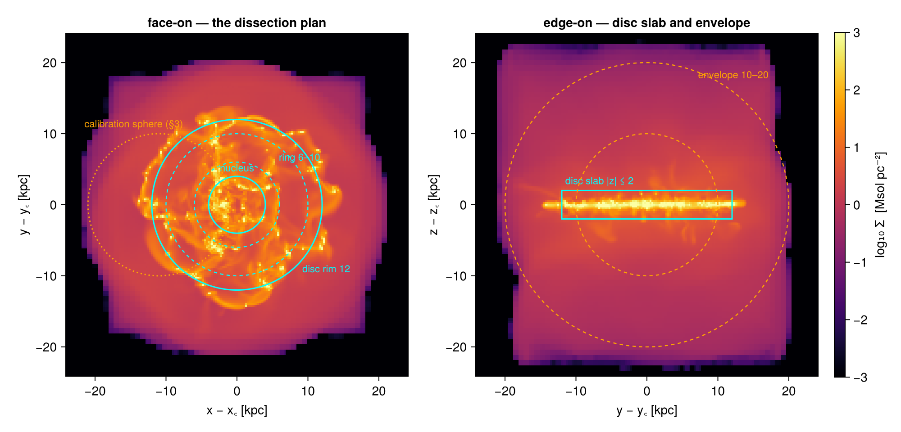
2. Hello, Sub-Region
One cut, end to end, before any subtlety. A value-type region is an ordinary Julia value — here Sphere(10.), a sphere of radius 10 kpc. Its constructor defaults do the right thing for this common case: center=[:bc] (the box centre) and range_unit=:kpc. Applying it with subregion returns a new object of the same type as gas (a HydroDataType), so everything that works on the full box — msum, getvar, projection, even further subregion calls — works on the cut, unchanged. By default the boundary cells are split (split=true), which is why the projected edge below follows the dashed analytic circle instead of a staircase of cells.
hello = subregion(gas, Sphere(10.), verbose=false) # center=[:bc], range_unit=:kpc are the defaults
println("returned type : ", typeof(hello).name.name, " (same as gas — fully chainable)")
println("cells selected : ", length(hello.data), " of ", length(gas.data))
println("gas mass, r < 10 kpc: ", round(msum(hello, :Msol), sigdigits=5), " Msol")
ph = proj(hello; xrange=[-11, 11], yrange=[-11, 11], pxsize=[0.1, :kpc])
# ── figure code from here: panels, overlays, colorbars — no new Mera concepts ──
fig = Figure(size=(600, 470))
ax = Axis(fig[1, 1], title="first cut — Sphere(10), boundary cells split")
show_sd!(ax, ph, (-11, 11, -11, 11))
arc!(ax, Point2f(0, 0), 10., 0, 2π; color=:white, linewidth=1, linestyle=:dash)
scalebar!(ax, -10, -10.3, 5)
sd_bar!(fig[1, 2])
figreturned type : HydroDataType
(same as gas — fully chainable)
cells selected : 11079571 of 18966620
gas mass, r < 10 kpc:
1.821e10 Msol
The three printed lines are the anatomy of every extraction on this page: a region value, a chainable result, a number. The dashed circle is the analytic sphere — the rendered gas ends on it because straddling cells contribute only their inside fraction.
Change the radius to Sphere(5.) and re-run the cell. The selected cell count drops far more steeply than the radius — you are cutting into the refined, gas-rich disc — while the mass falls only moderately: most of this galaxy's gas lives well inside 10 kpc.
3. One Sphere, Three Masses
Now the calibration promised in the plan. We place the same 10 kpc sphere off-centre, at x = 13 kpc (box-centre height in y and z), so its surface sweeps from fine disc cells into coarse cells near the box edge — exactly the situation where boundary cells matter. Before measuring it, look at what the three treatments do to a boundary, on a grid small enough to see every cell. The cartoon below is not simulation data; it is the algorithm itself, drawn — including a refined patch in the upper-right quadrant, because on an AMR mesh the same circle crosses cells of different sizes.
# ── ILLUSTRATION ONLY: this cell just DRAWS the split-cell schematic — no
# ── simulation data. Skim it if you trust the picture; the concepts resume
# ── in the next cell.
# a drawn 12×12 patch of an AMR grid (coarse 1-unit cells, one 2× refined
# quadrant) and one circular region — which cells does each treatment keep?
cells = Tuple{Float64,Float64,Float64}[] # (x0, y0, cell size)
for i in 0:11, j in 0:11
if i >= 6 && j >= 6 # the refined quadrant
for di in 0:1, dj in 0:1
push!(cells, (i + 0.5di, j + 0.5dj, 0.5))
end
else
push!(cells, (Float64(i), Float64(j), 1.0))
end
end
ccx, ccy, R = 5.7, 5.9, 4.3 # a circle grazing both mesh scales
inside(x, y) = (x - ccx)^2 + (y - ccy)^2 <= R^2
function insidefrac(x0, y0, s; n=32) # inside fraction by sub-sampling — what `nsub` does
hits = 0
for a in 1:n, b in 1:n
hits += inside(x0 + s*(a-0.5)/n, y0 + s*(b-0.5)/n)
end
return hits / n^2
end
F = [insidefrac(c...) for c in cells]
θ = range(0, 2π; length=181)
# ── figure code from here: panels, overlays, colorbars — no new Mera concepts ──
fig = Figure(size=(1080, 400))
titles = ("whole cells — every touched cell, entire",
"centre test — is the cell centre inside?",
"split — each cell weighted by its true fraction")
axs = [Axis(fig[1, k]; title=titles[k], aspect=DataAspect()) for k in 1:3]
foreach(hidedecorations!, axs)
for (k, ax) in enumerate(axs)
for (ci, (x0, y0, s)) in enumerate(cells)
keep = k == 2 ? inside(x0 + s/2, y0 + s/2) : F[ci] > 0
col = if !keep
:white
elseif k < 3 || F[ci] >= 1
RGBf(0.27, 0.47, 0.68) # counted in full
else
get(cgrad(:viridis), F[ci]) # boundary cell: weight = inside fraction
end
poly!(ax, Rect2f(x0, y0, s, s); color=col, strokecolor=:gray65, strokewidth=0.6)
end
lines!(ax, ccx .+ R .* cos.(θ), ccy .+ R .* sin.(θ); color=:red, linewidth=2)
end
let # centre dots near the rim of panel 2: filled = centre inside, hollow = outside
for (x0, y0, s) in cells
xm, ym = x0 + s/2, y0 + s/2
abs(sqrt((xm-ccx)^2 + (ym-ccy)^2) - R) < 1.4 || continue
scatter!(axs[2], [xm], [ym]; color=inside(xm, ym) ? :black : :white,
strokecolor=:black, strokewidth=0.8, markersize=5)
end
end
let # fraction labels on a few coarse boundary cells of panel 3
shown = 0
for (ci, (x0, y0, s)) in enumerate(cells)
if s == 1.0 && 0.1 < F[ci] < 0.95 && x0 < ccx && shown < 3
text!(axs[3], x0 + 0.5, y0 + 0.5; text=string(round(F[ci], digits=2)),
align=(:center, :center), fontsize=10, color=:white)
shown += 1
end
end
end
text!(axs[1], 0.3, 0.8; text="mostly-outside cells\nkept whole → over-count", fontsize=10, color=:black)
text!(axs[2], 0.3, 0.8; text="straddling cells\ndiscarded → under-count", fontsize=10, color=:black)
Colorbar(fig[1, 4]; colormap=:viridis, colorrange=(0, 1), label="volume fraction inside")
fig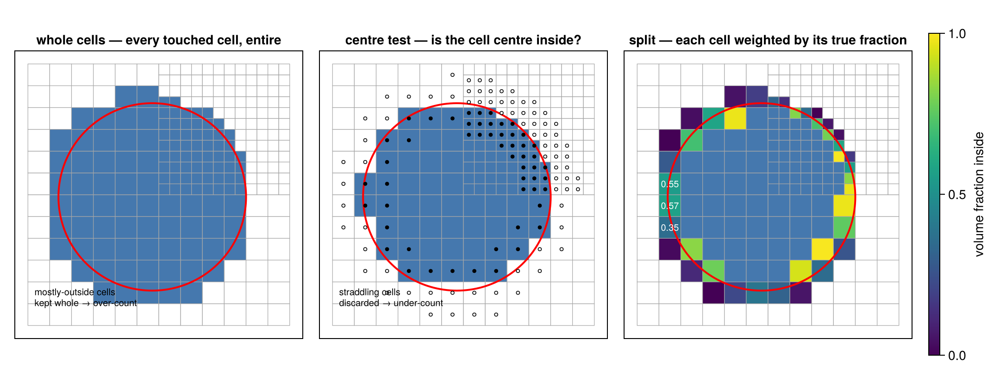
Note how the damage scales with cell size: in the refined quadrant all three panels nearly agree, while the coarse cells on the left carry the big errors. That is the whole boundary problem in one picture — and it is why the bracket below shrinks with resolution but never quite closes.
Now the same three treatments on real data — and all three come out of one value-type extraction. The split call is the reference. split=false applies the centre test instead (whole cells, no :fraction column). And the whole-cell answer needs no third machinery at all: take the split result and drop its :fraction column — every touched cell then counts in full, which is exactly what "keep every intersecting cell whole" means. (The classic symbol API offers the same two alternatives as cell=true / cell=false switches — see §9.)
ctr = [13., :bc, :bc] # x = 13 kpc; box centre in y and z
sph = subregion(gas, Sphere(10.; center=ctr, range_unit=:kpc), verbose=false) # split
sph_centre = subregion(gas, Sphere(10.; center=ctr, range_unit=:kpc);
split=false, verbose=false) # centre-inside cells, whole
# whole-cell mode = the split selection with its :fraction column removed:
cols_keep = Tuple(filter(!=(:fraction), propertynames(Mera.columns(sph.data))))
sph_whole = Mera.construct_datatype(Mera.select(sph.data, cols_keep), sph)
m_upper = msum(sph_whole, :Msol)
m_lower = msum(sph_centre, :Msol)
m_exact = msum(sph, :Msol)
println("gas mass inside r = 10 kpc:")
println(" whole cells (no :fraction) : ", round(m_upper, sigdigits=6), " Msol +",
round(100*(m_upper/m_exact - 1), sigdigits=3), " % vs split")
println(" centre test (split=false) : ", round(m_lower, sigdigits=6), " Msol ",
round(100*(m_lower/m_exact - 1), sigdigits=3), " % vs split")
println(" split (:fraction) : ", round(m_exact, sigdigits=6), " Msol reference")gas mass inside r = 10 kpc:
whole cells (no :fraction) : 1.19933e10 Msol +0.332 % vs split
centre test (split=false) : 1.19536e10 Msol -0.00125 % vs split
split (:fraction) : 1.19537e10 Msol referenceRead the two deviations carefully, because they are of different kinds. The whole-cell mode is a strict upper bound: its selection contains the split selection with every straddling cell at full weight, so it can only sit above. The centre test carries no guarantee at all: the straddlers it keeps over-count, the ones it discards under-count, and the two effects largely cancel — it typically lands very close to the split value, on either side (§4's ring makes that concrete). The distance between the three answers is set by the size of the cells the boundary happens to cross; it shrinks with refinement, but at any finite resolution the split value is the answer to quote, and the whole-cell excess is a fair measure of how much the boundary cells matter.
How exact are the fractions themselves? Honestly: exact to the accuracy of a sub-sampling. For curved regions Mera estimates each boundary cell's inside fraction by testing an nsub×nsub×nsub lattice of points per cell (default nsub=8, i.e. 512 samples; only axis-aligned Cuboid overlaps are computed analytically). We can measure that accuracy, because the split sphere's volume has an analytic truth, (4/3)πR³ — and we can buy it down by raising nsub:
v8 = sum(getvar(sph, :volume, :kpc3))
sph32 = subregion(gas, Sphere(10.; center=ctr, range_unit=:kpc); nsub=32, verbose=false)
v32 = sum(getvar(sph32, :volume, :kpc3))
v_ana = 4π/3 * 10.0^3
sph32 = nothing
println("(4/3) π R³ : ", round(v_ana, sigdigits=6), " kpc³")
println("split-cell volume, nsub = 8 : ", round(v8, sigdigits=6), " kpc³ (",
round(100*(v8/v_ana - 1), sigdigits=2), " %)")
println("split-cell volume, nsub = 32 : ", round(v32, sigdigits=6), " kpc³ (",
round(100*(v32/v_ana - 1), sigdigits=2), " %)")(4/3) π R³ : 4188.79
kpc³
split-cell volume, nsub = 8 : 4188.6 kpc³ (-0.0046 %)
split-cell volume, nsub = 32 : 4188.77 kpc³ (-0.00036 %)The default's deviation lives almost entirely in the coarse boundary cells on the sphere's far side — a handful of samples must stand in for a large volume. Raising nsub shrinks it at proportional cost. Keep the default for everyday work; raise it when a boundary crosses very coarse cells and the last decimals matter.
Now the pictures that explain the numbers — and, in the second row, a zoom onto the coarse western rim, because at full-figure scale the fine-side differences are smaller than a display pixel. The dashed circle is the analytic sphere; measure each treatment against it.
zoomw = (center=ctr, xrange=[-12, 12], yrange=[-12, 12], pxsize=[0.1, :kpc])
p_up = proj(sph_whole; zoomw...)
p_sp = proj(sph; zoomw...)
p_lo = proj(sph_centre; zoomw...)
fig = Figure(size=(1080, 700))
L = (-12, 12, -12, 12)
Lz = (-11, -7, -2, 2) # the coarse west rim
panels = ((p_up, "whole cells — bulges outward"),
(p_sp, "split — edge on the circle"),
(p_lo, "centres only — eroded inward"))
for (k, (p, ttl)) in enumerate(panels)
ax = Axis(fig[1, k], title=ttl)
show_sd!(ax, p, L)
arc!(ax, Point2f(0, 0), 10., 0, 2π; color=:white, linewidth=1, linestyle=:dash)
lines!(ax, [-11, -7, -7, -11, -11], [-2, -2, 2, 2, -2]; color=:cyan, linewidth=1)
axz = Axis(fig[2, k], title=k == 2 ? "zoom: the coarse west rim" : "")
show_sd!(axz, p, Lz)
arc!(axz, Point2f(0, 0), 10., 0, 2π; color=:white, linewidth=1.2, linestyle=:dash)
end
scalebar!(content(fig[1, 1]), -11, -11.2, 5)
sd_bar!(fig[:, 4])
fig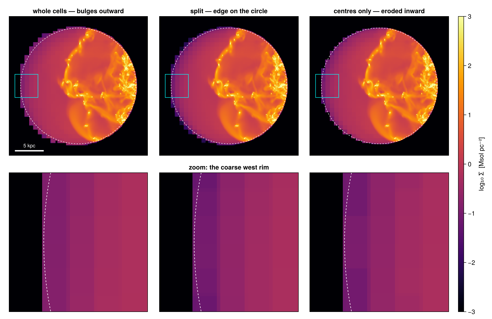
In the zoom the three verdicts of the cartoon reappear on real data: whole coarse blocks overshoot the dashed circle, the centre test bites visibly into it, and the split edge feathers on it — the residual softness is the projection depositing each straddling cell's (correctly weighted) mass over its full footprint, a point §7 returns to and measures.
And here is what "splitting" means cell by cell. We take the split sphere's boundary cells (those with 0 < fraction < 1) in a thin mid-plane slab and colour each cell by its inside fraction — the measured counterpart of the cartoon's third panel, down to the shared colormap. Marker size is drawn proportional to cell size.
cs = getvar(sph, :cellsize, :kpc)
xr = getvar(sph, :x, :kpc) .- 13. # cell centres relative to the sphere centre
yr = getvar(sph, :y, :kpc) .- 24. # (x = 13, y = z = 24 kpc)
zr = getvar(sph, :z, :kpc) .- 24.
f = Mera.select(sph.data, :fraction)
sel = (f .< 1.0) .& (abs.(zr) .< 1.) # boundary cells in a thin mid-plane slab
# ── figure code from here: panels, overlays, colorbars — no new Mera concepts ──
fig = Figure(size=(640, 520))
ax = Axis(fig[1, 1], title="boundary cells, |z| < 1 kpc — marker size ∝ cell size",
xlabel="x − x꜀ [kpc]", ylabel="y − y꜀ [kpc]", aspect=DataAspect())
sc = scatter!(ax, xr[sel], yr[sel]; color=f[sel], colormap=:viridis,
colorrange=(0, 1), markersize=16 .* cs[sel])
lines!(ax, 10 .* cos.(θ), 10 .* sin.(θ); color=:black, linewidth=1, linestyle=:dash)
text!(ax, -9.4, 6.5; text="coarse cells", color=:gray30, fontsize=11)
text!(ax, 5.2, -8.6; text="fine cells", color=:gray30, fontsize=11)
Colorbar(fig[1, 2], sc, label="volume fraction inside")
fig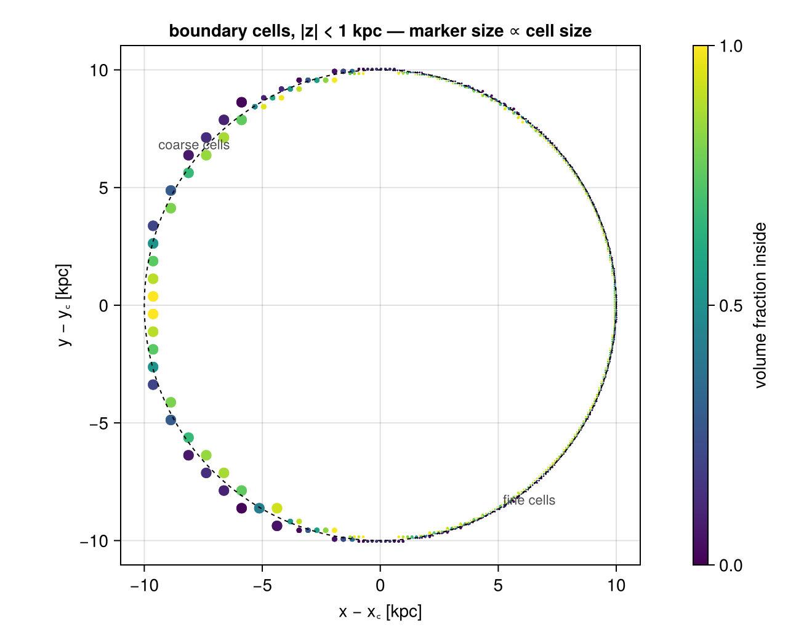
The fractions straddle the dashed analytic circle, exactly as drawn in the cartoon — and the AMR structure of the boundary is now explicit: toward the galaxy (lower right) the circle crosses many small cells, toward the box edge (upper left) a few large ones. Those few large ones are where the mass bracket and the volume deviation above come from.
The same bracket, where the mesh is coarse. One more measurement drives the lesson home. The calibration sphere's boundary still lives mostly in moderately refined gas; place a small sphere high above the disc plane, where the refinement criteria never triggered, and the whole-cell excess explodes — the systematic uncertainty of a whole-cell cut is set by the local cell size at the boundary, not by the overall quality of the simulation:
ctr_c = [:bc, :bc, 32.] # 8 kpc above the plane — coarse mesh
sph_c = subregion(gas, Sphere(1.5; center=ctr_c, range_unit=:kpc), verbose=false)
sph_cc = subregion(gas, Sphere(1.5; center=ctr_c, range_unit=:kpc); split=false, verbose=false)
cols_c = Tuple(filter(!=(:fraction), propertynames(Mera.columns(sph_c.data))))
sph_cw = Mera.construct_datatype(Mera.select(sph_c.data, cols_c), sph_c)
mc_u, mc_l, mc_e = msum(sph_cw, :Msol), msum(sph_cc, :Msol), msum(sph_c, :Msol)
println("gas mass inside r = 1.5 kpc, 8 kpc above the plane:")
println(" whole cells : +", round(100*(mc_u/mc_e - 1), sigdigits=3), " % vs split")
println(" centre test : ", round(100*(mc_l/mc_e - 1), sigdigits=3), " % vs split")
println(" split : ", round(mc_e, sigdigits=5), " Msol reference (",
length(sph_c.data), " cells, largest ",
round(maximum(getvar(sph_c, :cellsize, :kpc)), digits=3), " kpc)")gas mass inside r = 1.5 kpc, 8 kpc above the plane:
whole cells : +93.3 % vs split
centre test : 19.1 % vs split
split : 560090.0 Msol reference (66 cells, largest 0.75 kpc)Nearly a factor of two — from the same machinery that was sub-per-cent on the disc sphere — and even the centre test lands ~20 % off, because up here the boundary crosses a few dozen cells comparable in size to the region itself. Whenever you cut something small or something far from the refined regions, run this three-line comparison before trusting a whole-cell number.
4. The Budget, Piece by Piece
Calibration done — we know what to use (split regions), what the alternatives cost, and how to read a rendered edge. Now the galaxy. The budget of §6 will tile the disc into the four zones of the dissection plan; this chapter cuts each structure, measures it, and uses each one to introduce one more piece of the machinery.
The disc. A rotating disc calls for a cylinder: Cylinder(12., 2.) — radius 12 kpc and half-height 2 kpc (the slab spans |z| ≤ 2 kpc), centred on the box. Note the convention once and for all: the second argument is always the half-height. We extract it twice, split and with split=false (the centre test, no :fraction column), to carry the §3 lesson to a real component:
disc_region = Cylinder(12., 2.; center=[:bc], range_unit=:kpc) # radius, half-height
disc = subregion(gas, disc_region, verbose=false) # split boundary cells
disc_whole = subregion(gas, disc_region; split=false, verbose=false) # centre test
m_disc = msum(disc, :Msol)
m_discw = msum(disc_whole, :Msol)
println("disc gas mass (r < 12 kpc, |z| < 2 kpc):")
println(" split : ", round(m_disc, sigdigits=6), " Msol")
println(" split=false : ", round(m_discw, sigdigits=6), " Msol (",
round(100*(m_discw/m_disc - 1), sigdigits=3), " %)")disc gas mass (r < 12 kpc, |z| < 2 kpc):
split : 2.28346e10 Msol
split=false : 2.28475e10 Msol (0.0563 %)The residual is tiny here — the disc mid-plane is highly refined, so the boundary crosses small cells almost everywhere. Where the choice does matter is above the plane: edge-on, the cylinder's flat faces at z = ±2 kpc (dashed) cut through the coarser cells of the thick-gas layer. The split face feathers smoothly past the dashed surface — each straddling cell's correctly-weighted mass rendered over its full footprint, a projection effect §7 measures — while the centre-tested face ends in a hard edge stepped by whole cells.
p3 = proj(disc; direction=:x, yrange=[-14, 14], zrange=[-4, 4], pxsize=[0.1, :kpc])
p4 = proj(disc_whole; direction=:x, yrange=[-14, 14], zrange=[-4, 4], pxsize=[0.1, :kpc])
# ── figure code from here: panels, overlays, colorbars — no new Mera concepts ──
fig = Figure(size=(760, 500))
Le = (-14, 14, -4, 4)
ax1 = Axis(fig[1, 1], title="disc edge-on, split — the face feathers past z = ±2")
show_sd!(ax1, p3, Le)
ax2 = Axis(fig[2, 1], title="disc edge-on, split=false — a hard, stepped edge instead")
show_sd!(ax2, p4, Le)
for ax in (ax1, ax2), zpl in (-2., 2.)
lines!(ax, [-14., 14.], [zpl, zpl]; color=:cyan, linewidth=1, linestyle=:dash)
end
sd_bar!(fig[:, 2])
fig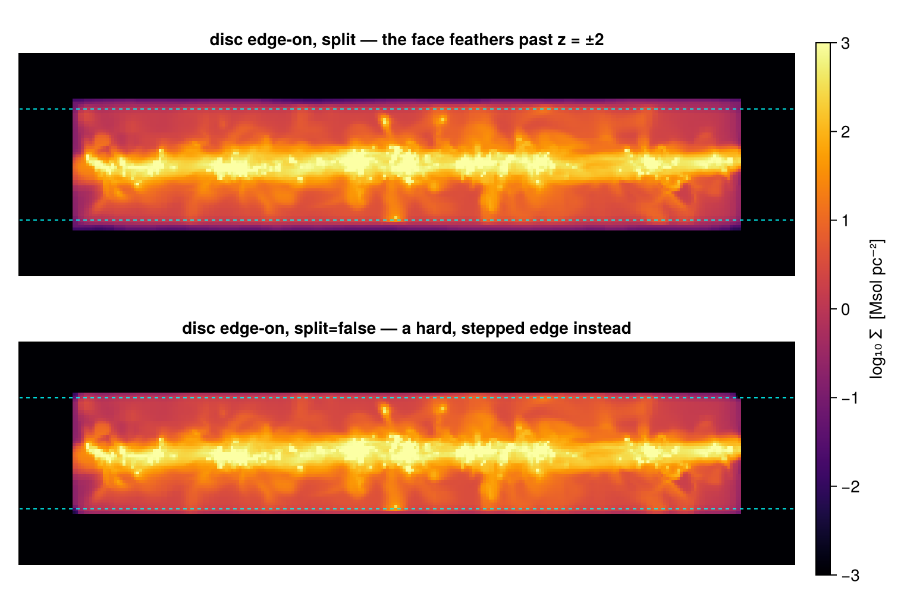
The nucleus zone — and every region's inverse. The innermost budget zone is Cylinder(4., 2.). Every region also defines its complement: with inverse=true the selection flips, and so do the fractions (fraction → 1 − fraction), so a boundary cell's material is shared between a region and its inverse with nothing counted twice and nothing lost. That makes region + inverse a partition of the whole box — our first balance check, and the mechanism the final ledger rests on.
One practical lesson rides along in the figure: a hole selected out of a 48-kpc-deep line of sight is nearly invisible — sightlines through the missing cylinder still cross all the gas in front of and behind it. To see an excavation, restrict the projection depth to the feature (here zrange=[-2, 2], matching the slab). Both panels below state that in the title.
nucleus_region = Cylinder(4., 2.; center=[:bc], range_unit=:kpc)
nucleus = subregion(gas, nucleus_region, verbose=false)
anti = subregion(gas, nucleus_region; inverse=true, verbose=false)
m_nuc, m_anti, m_tot = msum(nucleus, :Msol), msum(anti, :Msol), msum(gas, :Msol)
println("nucleus zone : ", round(m_nuc, sigdigits=6), " Msol")
println("nucleus + inverse : ", round(m_nuc + m_anti, sigdigits=8), " Msol")
println("whole box : ", round(m_tot, sigdigits=8), " Msol")
println("relative imbalance : ", round((m_nuc + m_anti)/m_tot - 1, sigdigits=2))
pn = proj(nucleus; xrange=[-13, 13], yrange=[-13, 13], zrange=[-2, 2], pxsize=[0.1, :kpc])
pa = proj(anti; xrange=[-13, 13], yrange=[-13, 13], zrange=[-2, 2], pxsize=[0.1, :kpc])
# ── figure code from here: panels, overlays, colorbars — no new Mera concepts ──
fig = Figure(size=(880, 440))
Ln = (-13, 13, -13, 13)
ax1 = Axis(fig[1, 1], title="nucleus zone (±2 kpc slab)")
ax2 = Axis(fig[1, 2], title="inverse=true — everything else (±2 kpc slab)")
show_sd!(ax1, pn, Ln); show_sd!(ax2, pa, Ln)
for ax in (ax1, ax2)
arc!(ax, Point2f(0, 0), 4., 0, 2π; color=:white, linewidth=1, linestyle=:dash)
end
sd_bar!(fig[1, 3])
fignucleus zone : 5.93727e9
Msol
nucleus + inverse : 3.0400672e10 Msol
whole box : 3.0400672e10 Msol
relative imbalance : 0.0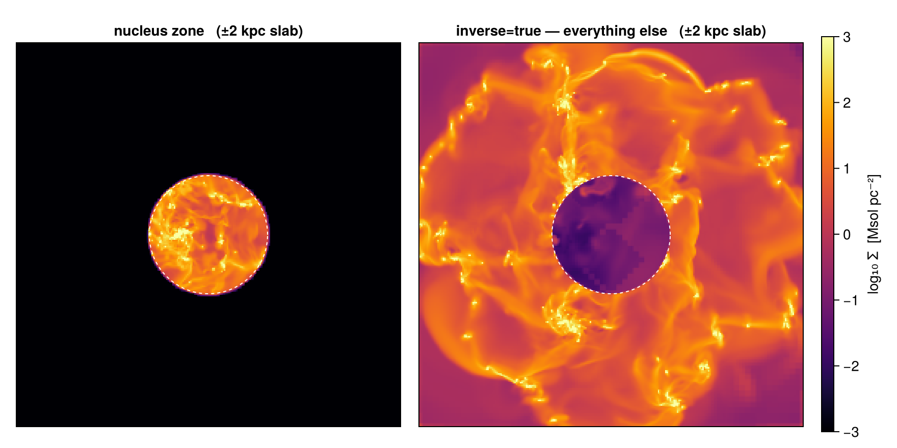
The two panels are literal complements: the gas missing from one is exactly the gas of the other, and their masses close on the box total to floating-point accuracy. Because the projection depth matches the slab, the excavated cylinder reads as a real void — though not a perfectly black one: the boundary cells' remaining fractions render over their full cell footprints, leaving a faint glow and a stepped rim just inside the dashed circle. That is the same footprint feathering §7 measures (and refine sharpens); the integrals above closed exactly regardless.
The star-forming ring. Dense gas often organises into rings; ours sits between 6 and 10 kpc. CylindricalShell(6., 10., 2.) selects that annulus within the ±2 kpc slab (inner radius first; both radii must be nonzero — the constructors guard against degenerate shells). A shell has two boundary surfaces, so the centre test now misjudges straddlers on two rims at once — its residual is the net of four small effects and can land on either side of the split value, which is why §3 called it an estimate rather than a bound. We also cut the ring's inverse — everything except the annulus — both as a second partition check and because a "disc with a gap" is a shape worth having in the toolbox:
ring_region = CylindricalShell(6., 10., 2.; center=[:bc], range_unit=:kpc)
ring = subregion(gas, ring_region, verbose=false)
ring_ctr = subregion(gas, ring_region; split=false, verbose=false)
m_ring = msum(ring, :Msol)
m_ringc = msum(ring_ctr, :Msol)
println("ring gas mass (6 < r < 10 kpc, |z| < 2 kpc):")
println(" split : ", round(m_ring, sigdigits=6), " Msol")
println(" split=false : ", round(m_ringc, sigdigits=6), " Msol (",
round(100*(m_ringc/m_ring - 1), sigdigits=3), " % — net of two rims' cancelling errors)")
ring_inv = subregion(gas, ring_region; inverse=true, verbose=false)
println("ring + inverse = box? ",
round((msum(ring, :Msol) + msum(ring_inv, :Msol))/msum(gas, :Msol), digits=10))
pr = proj(ring; xrange=[-11, 11], yrange=[-11, 11], pxsize=[0.1, :kpc])
pri = proj(ring_inv; xrange=[-11, 11], yrange=[-11, 11], zrange=[-2, 2], pxsize=[0.1, :kpc])
# ── figure code from here: panels, overlays, colorbars — no new Mera concepts ──
fig = Figure(size=(1180, 420))
ax1 = Axis(fig[1, 1], title="ring, split — two boundary surfaces")
show_sd!(ax1, pr, (-11, 11, -11, 11))
lines!(ax1, [4, 11, 11, 4, 4], [-3, -3, 3, 3, -3]; color=:cyan, linewidth=1)
ax2 = Axis(fig[1, 2], title="zoom: both rims on their circles")
show_sd!(ax2, pr, (4, 11, -3, 3))
ax3 = Axis(fig[1, 3], title="inverse=true — the gap it leaves (±2 kpc slab)")
show_sd!(ax3, pri, (-11, 11, -11, 11))
for ax in (ax1, ax2, ax3), r in (6., 10.)
arc!(ax, Point2f(0, 0), r, 0, 2π; color=:white, linewidth=1, linestyle=:dash)
end
sd_bar!(fig[1, 4])
figring gas mass (6 < r < 10 kpc, |z| < 2 kpc):
split : 8.03224e9 Msol
split=false : 8.02745e9 Msol (-0.0596 % — net of two rims' cancelling errors)
ring + inverse = box? 1.0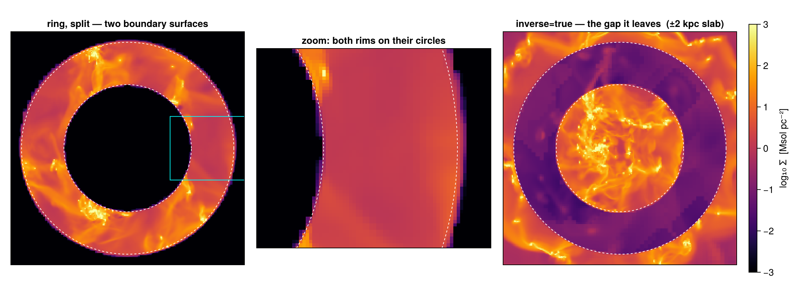
The envelope — sharing a surface without double counting. Outside the disc, a CGM-like envelope: SphericalShell(10., 20.). Its inner surface is the same r = 10 kpc sphere we cut in §2 (hello), which lets us fire the partition claim as a number: shell and enclosed sphere share the boundary cells at r = 10 via complementary fractions, so their masses must sum to the mass of a plain 20 kpc sphere.
env_region = SphericalShell(10., 20.; center=[:bc], range_unit=:kpc)
env = subregion(gas, env_region, verbose=false)
sph20 = subregion(gas, Sphere(20.), verbose=false)
m_env, m_hello, m_20 = msum(env, :Msol), msum(hello, :Msol), msum(sph20, :Msol)
println("envelope (10–20 kpc) : ", round(m_env, sigdigits=6), " Msol")
println("enclosed sphere (< 10) : ", round(m_hello, sigdigits=6), " Msol")
println("sum : ", round(m_env + m_hello, sigdigits=8), " Msol")
println("plain Sphere(20) directly : ", round(m_20, sigdigits=8), " Msol")
sph20 = nothing
pe1 = proj(env; direction=:x, yrange=[-22, 22], zrange=[-22, 22], pxsize=[0.15, :kpc])
pe2 = proj(hello; direction=:x, yrange=[-22, 22], zrange=[-22, 22], pxsize=[0.15, :kpc])
# ── figure code from here: panels, overlays, colorbars — no new Mera concepts ──
fig = Figure(size=(880, 440))
Lv = (-22, 22, -22, 22)
ax1 = Axis(fig[1, 1], title="envelope shell, edge-on")
ax2 = Axis(fig[1, 2], title="enclosed sphere, edge-on — same frame")
show_sd!(ax1, pe1, Lv); show_sd!(ax2, pe2, Lv)
arc!(ax1, Point2f(0, 0), 10., 0, 2π; color=:white, linewidth=1, linestyle=:dash)
arc!(ax1, Point2f(0, 0), 20., 0, 2π; color=:white, linewidth=1, linestyle=:dash)
arc!(ax2, Point2f(0, 0), 10., 0, 2π; color=:white, linewidth=1, linestyle=:dash)
sd_bar!(fig[1, 3])
figenvelope (10–20 kpc) : 1.18046e10
Msol
enclosed sphere (< 10) : 1.82103e10 Msol
sum : 3.0014956e10 Msol
plain Sphere(20) directly : 3.0014956e10 Msol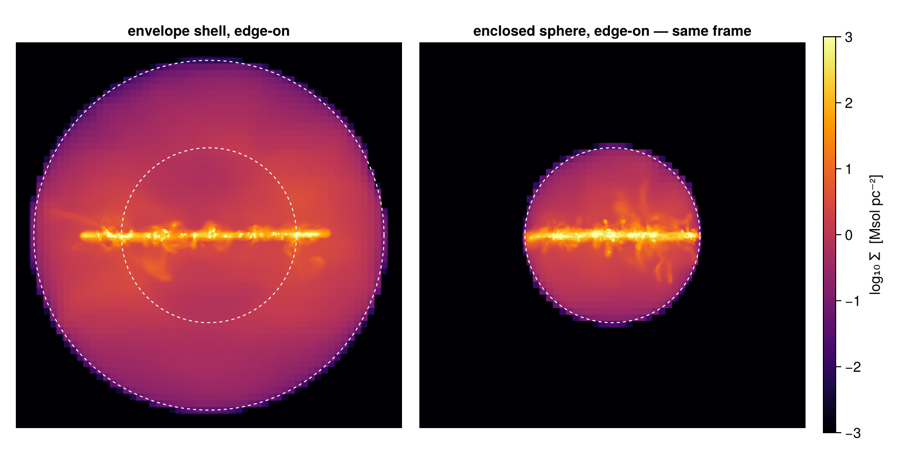
Both panels share one frame (±22 kpc) and the page's one colour scale, so the size relation and the brightness relation are real. The dashed r = 10 kpc circle appears in both: it is the shared surface — outer wall of the sphere, inner wall of the shell — and the printed sum shows its straddling cells being divided between the two without loss. The envelope stays outside the §6 budget (it is a spherical component, deliberately not part of the disc tiling), but it is measured with the same guarantee.
5. Region Algebra: Composing Regions
Regions are values, so they compose with the set operators ∩ (also &), ∪ (also |), \ (difference), and ! (complement) — arbitrarily nested, with a different centre allowed in every part, and the composite's boundary cells are still fraction-weighted (curved composite surfaces are sub-sampled per cell; nsub from §3 controls how finely).
∪ and ∩ are the mathematical set-union and set-intersection symbols. In the Julia REPL, Jupyter, and VS Code you get them by LaTeX-style tab completion: type \cup then press TAB for ∪, and \cap TAB for ∩ (\ difference and ! complement are plain ASCII already). If you prefer to avoid Unicode entirely, every operator has an ASCII equivalent: A ∪ B == A | B == union(A, B), A ∩ B == A & B == intersect(A, B), and A \ B == setdiff(A, B).
The classic use case: a "disc without the bulge". Subtracting a 4-kpc sphere from the disc cylinder has one subtlety that makes it a good example — the sphere pokes above and below the ±2 kpc slab, so the mass it removes from the disc is not the full sphere mass but the mass of disc ∩ sphere. The algebra keeps that book for us:
bulge_sphere = Sphere(4.; center=[:bc], range_unit=:kpc)
clean_disc = subregion(gas, disc_region \ bulge_sphere, verbose=false)
overlap = subregion(gas, disc_region ∩ bulge_sphere, verbose=false)
m_clean = msum(clean_disc, :Msol)
m_olap = msum(overlap, :Msol)
println("disc \\ sphere : ", round(m_clean, sigdigits=6), " Msol")
println("disc ∩ sphere : ", round(m_olap, sigdigits=6), " Msol")
println("sum : ", round(m_clean + m_olap, sigdigits=8),
" vs disc: ", round(m_disc, sigdigits=8), " Msol")
pc1 = proj(clean_disc; xrange=[-13, 13], yrange=[-13, 13], pxsize=[0.1, :kpc])
pc2 = proj(clean_disc; direction=:x, xrange=[-3, 3], yrange=[-13, 13], zrange=[-4, 4],
pxsize=[0.1, :kpc]) # depth-restricted: the bite is visible
# ── figure code from here: panels, overlays, colorbars — no new Mera concepts ──
fig = Figure(size=(760, 560))
ax1 = Axis(fig[1, 1], title="disc \\ sphere, face-on")
show_sd!(ax1, pc1, (-13, 13, -13, 13))
arc!(ax1, Point2f(0, 0), 4., 0, 2π; color=:white, linewidth=1, linestyle=:dash)
ax2 = Axis(fig[2, 1], title="edge-on, ±3 kpc slab — the lens-shaped bite")
show_sd!(ax2, pc2, (-13, 13, -4, 4))
arc!(ax2, Point2f(0, 0), 4., 0, 2π; color=:white, linewidth=1, linestyle=:dash)
for zpl in (-2., 2.)
lines!(ax2, [-13., 13.], [zpl, zpl]; color=:cyan, linewidth=1, linestyle=:dash)
end
sd_bar!(fig[:, 2])
figdisc \ sphere : 1.69318e10
Msol
disc ∩ sphere : 5.90283e9 Msol
sum : 2.2834624e10 vs disc: 2.2834625e10 Msol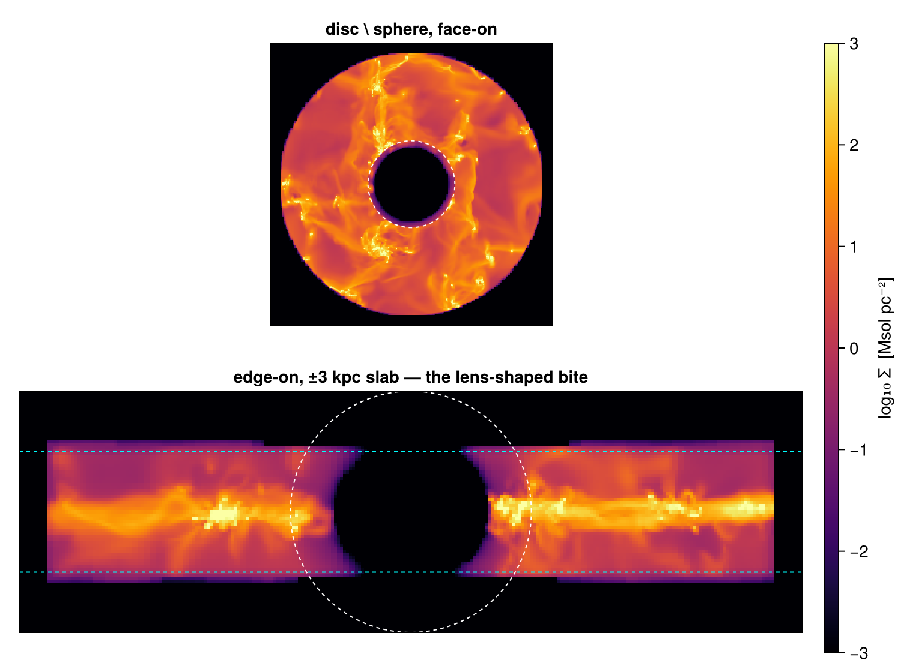
The printed sum closes on the disc mass — difference and intersection partition the disc just as region and inverse partitioned the box. In the edge-on panel the line of sight is restricted to a ±3 kpc slab (the §4 lesson), so the sphere's bite out of the slab reads as the lens-shaped dark region between the dashed slab faces, not as a faint dimming.
Nothing limits composition to two parts. Below, a deliberately playful carve — the disc unioned with an off-centre 5-kpc "companion" sphere, minus two drilled holes — in one expression, every piece with its own centre. The two holes look different for a real geometric reason, annotated in the figure:
sculpture = (disc_region ∪ Sphere(5.; center=[33., :bc, :bc], range_unit=:kpc)) \
(Sphere(2.5; center=[18., :bc, :bc], range_unit=:kpc) ∪
Sphere(2.5; center=[30., :bc, :bc], range_unit=:kpc))
carve = subregion(gas, sculpture, verbose=false)
println("sculpture gas mass: ", round(msum(carve, :Msol), sigdigits=6), " Msol")
ps = proj(carve; xrange=[-16, 16], yrange=[-16, 16], pxsize=[0.1, :kpc])
# ── figure code from here: panels, overlays, colorbars — no new Mera concepts ──
fig = Figure(size=(640, 520))
ax = Axis(fig[1, 1], title="(disc ∪ companion) \\ two holes")
show_sd!(ax, ps, (-16, 16, -16, 16))
text!(ax, 9.0, 5.6; text="companion", color=:cyan, fontsize=11, align=(:center, :bottom))
text!(ax, -6.5, -13.6; text="left hole — drills through\nthe whole ±2 kpc slab", color=:cyan,
fontsize=10, align=(:center, :top))
text!(ax, 8.5, -13.6; text="right hole — companion gas\nremains behind it", color=:cyan,
fontsize=10, align=(:center, :top))
scalebar!(ax, -15, 14.6, 5)
sd_bar!(fig[1, 2])
figsculpture gas mass: 2.25759e10
Msol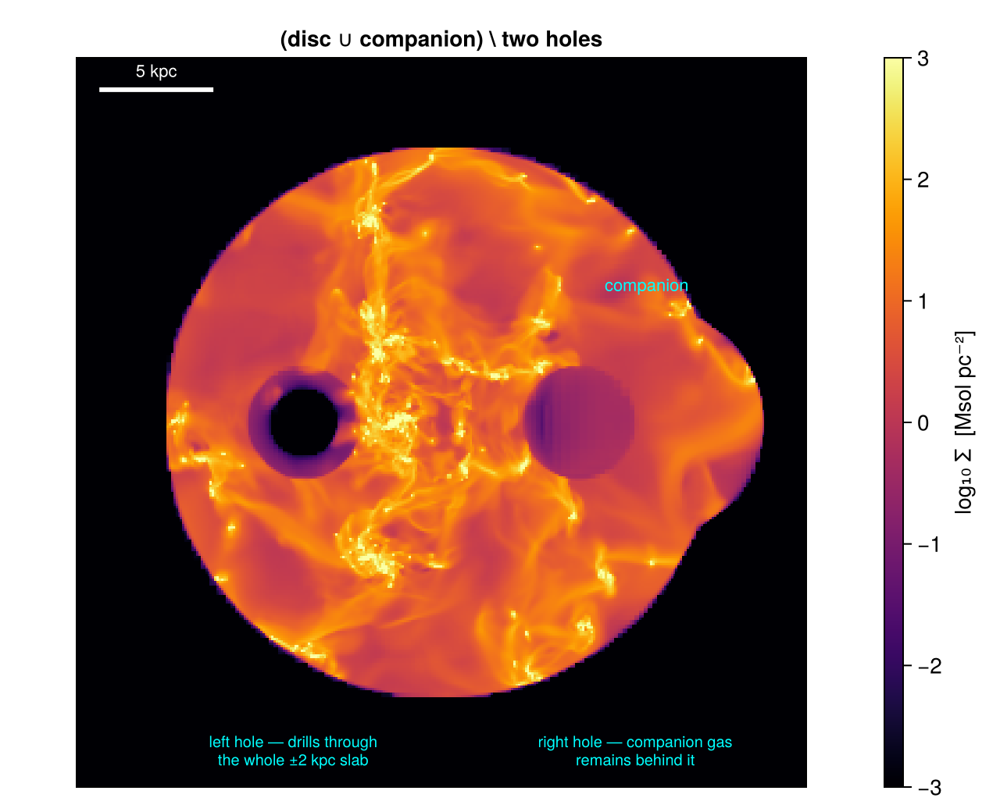
The left hole is black: its 2.5-kpc drill radius exceeds the disc's 2-kpc half-height, so it pierces the slab completely. The right hole only dims: it sits inside the companion sphere, which is thicker than the drill along the line of sight, so companion gas survives in front of and behind the hole. Reading a projection of a 3-D carve means reasoning about depth — the two holes are that lesson in one figure.
The same carve, as a readable block. Once a composite grows past two or three parts, the repeated keywords become noise. The @region macro removes them: constructor calls inside the block inherit the shared unit/center (explicitly given ones win), assignments name the parts, and the value that comes out is an ordinary region — identical to the operator form:
sculpture2 = @region unit=:kpc center=[:bc] begin
disc = Cylinder(12., 2.)
companion = Sphere(5.; center=[33., :bc, :bc])
holeL = Sphere(2.5; center=[18., :bc, :bc])
holeR = Sphere(2.5; center=[30., :bc, :bc])
(disc ∪ companion) \ (holeL ∪ holeR)
end
carve2 = subregion(gas, sculpture2, verbose=false)
println("identical to the operator form : ", msum(carve2, :Msol) == msum(carve, :Msol))identical to the operator form : trueBecause the fractions are carried through every operator, set identities hold numerically, not just formally. Inclusion–exclusion for the disc A and the companion sphere B:
A = disc_region
B = Sphere(5.; center=[33., :bc, :bc], range_unit=:kpc)
volk(r) = sum(getvar(subregion(gas, r, verbose=false), :volume, :kpc3))
vA, vB, vAB, vAuB = volk(A), volk(B), volk(A ∩ B), volk(A ∪ B)
println("vol(A) + vol(B) − vol(A ∩ B) = ", round(vA + vB - vAB, sigdigits=6), " kpc³")
println("vol(A ∪ B) = ", round(vAuB, sigdigits=6), " kpc³")vol(A) + vol(B) − vol(A ∩ B) = 2082.22
kpc³
vol(A ∪ B) = 2082.22 kpc³A cylindrical shell is itself expressible in the algebra: Cylinder(10., 2.) \ Cylinder(6., 2.) describes the same annulus as CylindricalShell(6., 10., 2.). Extract both and compare msum — the dedicated shell type computes its fractions in one pass, but the two volumes should agree to the sampling accuracy of §3.
6. The Ledger: Does It Balance?
The payoff. The four zones of the dissection plan tile the disc — same half-height, radial edges meeting exactly — so their masses must reassemble the disc mass measured in §4. This is the property that makes a component table a budget rather than a list: overlapping components (a sphere here, a cylinder there) can easily sum to more gas than the galaxy contains, and nothing in the table would warn you. Adjacent split regions warn you: they share every boundary cell via complementary fractions, so the books must close.
inner_zone = CylindricalShell(4., 6., 2.; center=[:bc], range_unit=:kpc)
rim_zone = CylindricalShell(10., 12., 2.; center=[:bc], range_unit=:kpc)
m_inner = msum(subregion(gas, inner_zone, verbose=false), :Msol)
m_rim = msum(subregion(gas, rim_zone, verbose=false), :Msol)
zones = [("nucleus — Cylinder(4, ±2 kpc)", m_nuc),
("inner — CylindricalShell(4–6, ±2 kpc)", m_inner),
("ring — CylindricalShell(6–10, ±2 kpc)", m_ring),
("rim — CylindricalShell(10–12, ±2 kpc)", m_rim)]
println(rpad("disc zone", 44), "gas mass [Msol]")
println("-"^60)
for (name, m) in zones
println(rpad(name, 44), round(m, sigdigits=5))
end
m_sum = sum(last.(zones))
println("-"^60)
println(rpad("sum of the four zones", 44), round(m_sum, sigdigits=8))
println(rpad("disc, measured directly (§4)", 44), round(m_disc, sigdigits=8))
println(rpad("relative residual", 44), round(m_sum/m_disc - 1, sigdigits=2))disc zone gas mass [Msol]
------------------------------------------------------------
nucleus — Cylinder(4, ±2 kpc) 5.9373e9
inner — CylindricalShell(4–6, ±2 kpc) 3.9504e9
ring — CylindricalShell(6–10, ±2 kpc) 8.0322e9
rim — CylindricalShell(10–12, ±2 kpc) 4.9147e9
------------------------------------------------------------
sum of the four zones 2.2834625e10
disc, measured directly (§4) 2.2834625e10
relative residual 0.0The ledger balances to floating-point accuracy — not because the numbers were tuned, but because fraction-weighted regions make additivity a structural property: every cell on a shared internal edge contributes its inside fraction to one zone and the complement to the neighbour. The envelope of §4 remains a separate line of the analysis (a spherical shell cannot tile with cylindrical zones), which is exactly the kind of statement an honest budget forces you to make explicit.
7. How Exact Is Exact?
Two different questions hide in that phrase, and this page has already answered the first: integrals (mass, volume, anything summed via :fraction) are exact to the boundary-sampling accuracy of §3 — sub-percent by default, purchasable to better with nsub.
And no amount of boundary refinement could improve those integrals: a straddling cell's children inherit their parent's (piecewise-constant) field values, and their fraction-weighted volumes telescope back to the parent's — the sum of v·f over the children equals V·f of the parent by construction. The :fraction column already is the sub-cell geometry, integrated. That is why the mass-invariance prints below sit at 1, and why refine/refine_to are rendering tools, not accuracy tools.
Rendered boundaries are a different matter. A projection deposits each straddling cell's fraction-weighted mass over the cell's full footprint — the mass is right, but it is spread at the local cell scale, so a split edge feathers. The bound is simple: rendered mass can appear at most one boundary cell plus one pixel beyond the analytic surface. When the boundary crosses coarse cells, that fringe is visibly thick — and refine=k buys it down by subdividing only the boundary cells into their octree children (each child re-measured, down to depth k), localising the fringe to cellsize/2ᵏ.
We measure both on the disc's flat face, in a small slab around the rim so the refined extraction stays cheap (refining the entire disc boundary of a large simulation is memory-hungry — scope refine to the region you will actually render):
slab = subregion(gas, :cuboid; xrange=[6., 14.], yrange=[-2., 2.], zrange=[-4., 4.],
center=[:bc], range_unit=:kpc, verbose=false) # a light working slab
d_s0 = subregion(slab, disc_region, verbose=false) # split, refine=0
d_ref = subregion(slab, disc_region; refine=2, verbose=false) # boundary subdivided 2×
pe_s0 = projection(d_s0, :sd, :Msol_pc2; direction=:y, center=[:bc], range_unit=:kpc,
xrange=[6., 14.], zrange=[-4., 4.], pxsize=[0.02, :kpc],
verbose=false, show_progress=false)
pe_r = projection(d_ref, :sd, :Msol_pc2; direction=:y, center=[:bc], range_unit=:kpc,
xrange=[6., 14.], zrange=[-4., 4.], pxsize=[0.02, :kpc],
verbose=false, show_progress=false)
zs = collect(range(pe_s0.cextent[3]*kpc, pe_s0.cextent[4]*kpc; length=size(pe_s0.maps[:sd], 2)))
fringe(p) = maximum(maximum(abs.(zs)[p.maps[:sd][i, :] .> 1e-2]; init=0.0)
for i in 1:size(p.maps[:sd], 1)) - 2.0 # kpc beyond the |z| = 2 face
fr = Mera.select(d_s0.data, :fraction)
csb = getvar(d_s0, :cellsize, :kpc)[0.0 .< fr .< 1.0] # boundary cells only
println("largest boundary cell in the cut : ", round(maximum(csb), digits=3), " kpc")
println("rendered fringe beyond |z| = 2 kpc :")
println(" refine=0 : ", round(fringe(pe_s0), digits=3), " kpc (bound: cell + pixel = ",
round(maximum(csb) + 0.02, digits=3), " kpc)")
println(" refine=2 : ", round(fringe(pe_r), digits=3), " kpc")
println("mass invariance, refine=2 / refine=0 : ",
round(msum(d_ref, :Msol) / msum(d_s0, :Msol), digits=5))
# ── figure code from here: panels, overlays, colorbars — no new Mera concepts ──
fig = Figure(size=(920, 440))
Lf = (6, 14, -4, 4)
ax1 = Axis(fig[1, 1], title="split, refine=0 — fringe at the local cell size")
ax2 = Axis(fig[1, 2], title="split, refine=2 — fringe ÷ 4")
show_sd!(ax1, pe_s0, Lf); show_sd!(ax2, pe_r, Lf)
for ax in (ax1, ax2), zpl in (-2., 2.)
lines!(ax, [6., 14.], [zpl, zpl]; color=:cyan, linewidth=1, linestyle=:dash)
end
sd_bar!(fig[1, 3])
figlargest boundary cell in the cut : 0.375
kpc
rendered fringe beyond |z| = 2 kpc :
refine=0 : 0.265 kpc (bound: cell + pixel = 0.395 kpc)
refine=2 : 0.064 kpc
mass invariance, refine=2 / refine=0 : 0.99966The printed fringe sits inside its bound, and refine=2 cuts it by the promised factor of four while the enclosed mass stays put at the sampling level — the children re-measure their fractions, so tiny corrections at the fourth decimal place are expected, not alarming. Use refine when a rendered boundary must be sharp (figures, mock observations); plain split already gives you the correct numbers.
Matching the boundary to the map. Guessing the right depth is unnecessary: refine_to=[length, unit] lets every straddling cell pick its own depth so its children are no larger than the given length. Set it to your projection's pxsize and the selection boundary is subdivided at the scale of the projected grid — the rendered edge becomes pixel-sharp regardless of the local AMR level, and the picture now illustrates the exact-split scheme at exactly the resolution you are looking at:
d_px = subregion(slab, disc_region; refine_to=[0.05, :kpc], verbose=false) # ≈ the map scale
slab = nothing
pe_px = projection(d_px, :sd, :Msol_pc2; direction=:y, center=[:bc], range_unit=:kpc,
xrange=[6., 14.], zrange=[-4., 4.], pxsize=[0.02, :kpc],
verbose=false, show_progress=false)
frx = Mera.select(d_px.data, :fraction)
csx = getvar(d_px, :cellsize, :kpc)[0.0 .< frx .< 1.0]
println("largest straddling cell after refine_to : ", round(maximum(csx), digits=3),
" kpc (was ", round(maximum(csb), digits=3), " kpc)")
println("rendered fringe beyond |z| = 2 kpc : ", round(fringe(pe_px), digits=3), " kpc")
println("mass invariance vs refine=0 : ",
round(msum(d_px, :Msol) / msum(d_s0, :Msol), digits=5))largest straddling cell after refine_to : 0.047
kpc (was 0.375 kpc)
rendered fringe beyond |z| = 2 kpc : 0.024 kpc
mass invariance vs refine=0 : 0.99944And the honest cosmetic alternative. For a publication figure the feather can also simply be clipped at the geometric surface — legitimate as long as the caption says so, because the clip is display-only: the faint fringe holds a tiny fraction of the map mass, and the integrals you quote come from msum, which never depended on the rendering.
clipped = copy(pe_s0.maps[:sd])
zmask = abs.(zs) .> 2.0
clipped[:, zmask] .= 0.0 # DISPLAY clip only
frac_clipped = sum(pe_s0.maps[:sd][:, zmask]) / sum(pe_s0.maps[:sd])
println("map mass removed by the display clip : ",
round(100*frac_clipped, sigdigits=2), " % (cosmetic only — msum is untouched)")
# ── figure code from here: panels, overlays, colorbars — no new Mera concepts ──
fig = Figure(size=(920, 440))
ax1 = Axis(fig[1, 1], title="split edge — as rendered")
show_sd!(ax1, pe_s0, (6, 14, -4, 4))
ax2 = Axis(fig[1, 2], title="display-clipped at |z| = 2 (cosmetic)")
xs2 = range(pe_s0.cextent[1]*kpc, pe_s0.cextent[2]*kpc; length=size(clipped, 1))
heatmap!(ax2, xs2, zs, log10.(max.(clipped, 1e-3)); colormap=:inferno, colorrange=SDLIM)
ax2.aspect = DataAspect(); ax2.backgroundcolor = :black; hidedecorations!(ax2)
limits!(ax2, 6, 14, -4, 4)
for ax in (ax1, ax2), zpl in (-2., 2.)
lines!(ax, [6., 14.], [zpl, zpl]; color=:cyan, linewidth=1, linestyle=:dash)
end
sd_bar!(fig[1, 3])
figmap mass removed by the display clip : 0.45
% (cosmetic only — msum is untouched)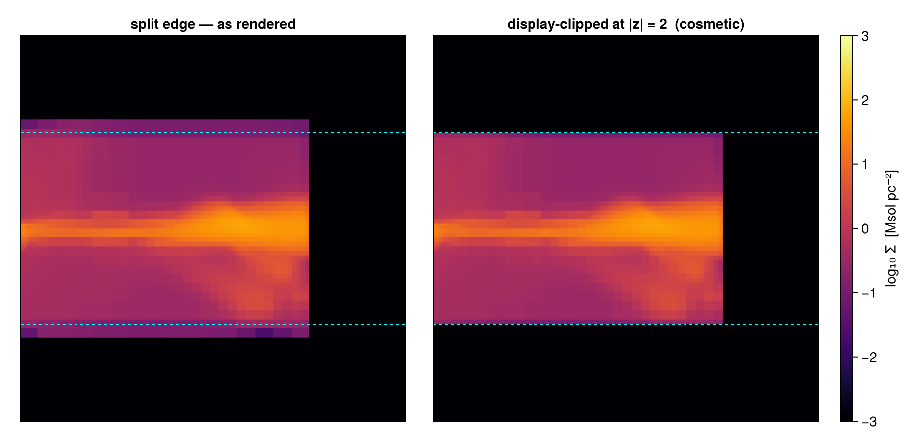
8. Tilted Regions
Real structures rarely align with the grid. The value-type Cylinder (and CylindricalShell) accept any 3-vector as axis — only the value types can do this; the classic :cylinder symbol form is strictly z-aligned. Projected images compress the third dimension, so before extracting anything tilted, it pays to draw the geometry once:
using LinearAlgebra
a = normalize([1., 0., 2.]) # cylinder axis, tipped toward +x
e1 = normalize(cross([0., 0., 1.], a)) # ⊥ a
e2 = normalize(cross(a, e1)) # completes the orthonormal basis
θ3 = range(0, 2π; length=121)
# ── figure code from here: panels, overlays, colorbars — no new Mera concepts ──
fig = Figure(size=(700, 560))
ax = Axis3(fig[1, 1]; aspect=:data, azimuth=0.9, elevation=0.25,
title="a tilted cylinder through the disc — the geometry")
for zpl in (-2., 2.) # the ±2 kpc disc slab: top and bottom faces
lines!(ax, 12 .* cos.(θ3), 12 .* sin.(θ3), fill(zpl, 121); color=:gray60)
end
for φ in range(0, 2π; length=9)[1:8] # vertical strokes joining the faces
lines!(ax, fill(12cos(φ), 2), fill(12sin(φ), 2), [-2., 2.]; color=:gray80)
end
for s in (-1., 1.) # the tilted cylinder: rims at ±1 kpc along its axis
rim = [s .* a .+ 10. .* (cos(t) .* e1 .+ sin(t) .* e2) for t in θ3]
lines!(ax, getindex.(rim, 1), getindex.(rim, 2), getindex.(rim, 3);
color=:cyan, linewidth=1.5)
end
lines!(ax, [-6a[1], 6a[1]], [-6a[2], 6a[2]], [-6a[3], 6a[3]]; color=:teal, linewidth=2)
text!(ax, Point3f(6.6a[1], 0, 6.6a[3]); text="cylinder axis [1, 0, 2]", color=:teal, fontsize=11)
lines!(ax, [0., 0.], [0., 0.], [-6., 6.]; color=:black, linewidth=1)
text!(ax, Point3f(0, 0, 6.5); text="disc normal (z)", color=:black, fontsize=11)
fig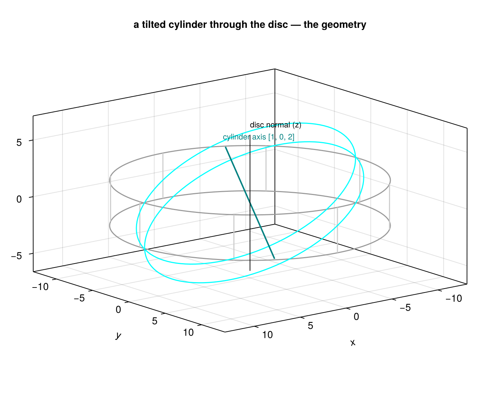
Now the extraction: Cylinder(10., 1.; axis=[1., 0., 2.]), a thin disc-like slab tilted toward +x. Two checks that the tilt costs nothing: the volume against the analytic πR²·2h (orientation does not enter the truth), and two complementary views — along z the tilt reads only as a softened ellipse, along y it reads as what it is, an inclined bar. To view along the tilted axis rather than merely select along it, see the off-axis projection tutorials (Projections: Off-Axis, Off-axis Projection).
tilt_region = Cylinder(10., 1.; axis=[1., 0., 2.], center=[:bc], range_unit=:kpc)
tilted = subregion(gas, tilt_region, verbose=false)
v_tilt = sum(getvar(tilted, :volume, :kpc3))
v_ana = π * 10.0^2 * 2.0
println("tilted-cylinder gas mass : ", round(msum(tilted, :Msol), sigdigits=6), " Msol")
println("volume : ", round(v_tilt, sigdigits=6), " kpc³ vs πR²·2h = ",
round(v_ana, sigdigits=6), " kpc³ (", round(100*(v_tilt/v_ana - 1), sigdigits=2), " %)")
pt1 = proj(tilted; xrange=[-13, 13], yrange=[-13, 13], pxsize=[0.1, :kpc])
pt2 = proj(tilted; direction=:y, xrange=[-13, 13], zrange=[-7, 7], pxsize=[0.1, :kpc])
# ── figure code from here: panels, overlays, colorbars — no new Mera concepts ──
fig = Figure(size=(920, 440))
ax1 = Axis(fig[1, 1], title="seen along z — an ellipse with softened rims")
show_sd!(ax1, pt1, (-13, 13, -13, 13))
ax2 = Axis(fig[1, 2], title="seen along y — the inclined bar it actually is")
show_sd!(ax2, pt2, (-13, 13, -7, 7))
lines!(ax2, [0., 3.5a[1]], [0., 3.5a[3]]; color=:cyan, linewidth=1.5)
text!(ax2, 3.5a[1] + 0.5, 3.5a[3]; text="cylinder axis", color=:cyan, fontsize=11,
align=(:left, :center))
sd_bar!(fig[1, 3])
figtilted-cylinder gas mass : 5.43585e9
Msol
volume : 628.848 kpc³ vs πR²·2h = 628.319 kpc³ (0.084 %)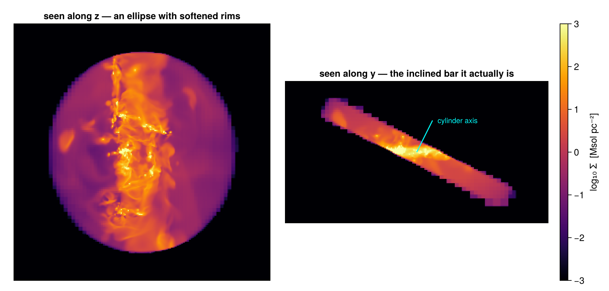
The volume lands on the analytic value to the usual sampling accuracy — tilting a region moves no goalposts. And the two views are the depth lesson of §5 one more time: the same selection can look like a blur or like a bar, depending on which axis you compress.
Shells tilt too — CylindricalShell takes the same axis — and for a tilted selection the natural view is along its own axis, which the off-axis projection provides directly (los= takes the same vector). Three views of one tilted ring: face-on it is an elliptical annulus, along its own axis it becomes the circular ring it really is, and edge-on (along y) it shows its inclination. As a second orientation check, an in-plane bar — a thin cylinder whose axis lies in the disc plane — plus the volume-invariance numbers for both:
tshell_region = CylindricalShell(6., 10., 1.; axis=[1., 0., 2.], center=[:bc], range_unit=:kpc)
tshell = subregion(gas, tshell_region, verbose=false)
v_ts = sum(getvar(tshell, :volume, :kpc3))
v_up = sum(getvar(subregion(gas, CylindricalShell(6., 10., 1.; center=[:bc], range_unit=:kpc),
verbose=false), :volume, :kpc3))
println("tilted shell volume : ", round(v_ts, sigdigits=6), " kpc³ upright: ",
round(v_up, sigdigits=6), " kpc³ analytic π(R²−r²)·2h = ",
round(π*(100-36)*2, sigdigits=6), " kpc³")
bar_region = Cylinder(4., 1.2; axis=[cosd(25.), sind(25.), 0.], center=[:bc], range_unit=:kpc)
bar = subregion(gas, bar_region, verbose=false)
println("in-plane bar volume : ", round(sum(getvar(bar, :volume, :kpc3)), sigdigits=6),
" kpc³ analytic πR²·2h = ", round(π*16*2.4, sigdigits=6), " kpc³")
pt_f = proj(tshell; xrange=[-12, 12], yrange=[-12, 12], pxsize=[0.1, :kpc])
pt_a = projection(tshell, :sd, :Msol_pc2; los=[1., 0., 2.], center=[:bc], range_unit=:kpc,
pxsize=[0.1, :kpc], verbose=false, show_progress=false)
pt_e = proj(tshell; direction=:y, xrange=[-12, 12], zrange=[-8, 8], pxsize=[0.1, :kpc])
pb = proj(bar; xrange=[-6, 6], yrange=[-6, 6], pxsize=[0.05, :kpc])
# ── figure code from here: panels, overlays, colorbars — no new Mera concepts ──
fig = Figure(size=(1180, 760))
ax1 = Axis(fig[1, 1], title="tilted ring along z — an elliptical annulus")
show_sd!(ax1, pt_f, (-12, 12, -12, 12))
ax2 = Axis(fig[1, 2], title="along its own axis (los = [1, 0, 2]) — a circle again")
show_sd!(ax2, pt_a)
for r in (6., 10.)
arc!(ax2, Point2f(0, 0), r, 0, 2π; color=:white, linewidth=1, linestyle=:dash)
end
ax3 = Axis(fig[2, 1], title="along y — the inclination, explicit")
show_sd!(ax3, pt_e, (-12, 12, -8, 8))
ax4 = Axis(fig[2, 2], title="in-plane bar (axis 25° in the disc plane), face-on")
show_sd!(ax4, pb, (-6, 6, -6, 6))
sd_bar!(fig[:, 3])
figtilted shell volume : 402.739
kpc³ upright: 403.265 kpc³ analytic π(R²−r²)·2h = 402.124 kpc³
in-plane bar volume : 120.595
kpc³ analytic πR²·2h = 120.637 kpc³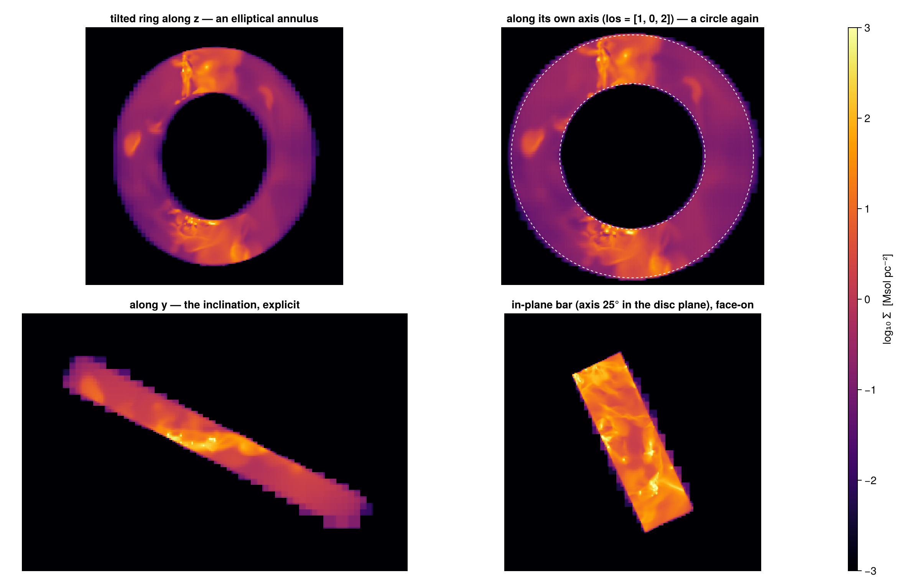
The along-axis panel is the payoff: the dashed analytic circles at 6 and 10 kpc land on the rendered rims, because selecting along a vector and viewing along the same vector are consistent operations. Both tilted volumes agree with their upright twins and with the analytic values — orientation costs nothing.
9. Composite Regions with a Purpose
Everything so far combined at most three shapes. Nothing stops a composition from being a small model — each construct below answers a question a plain shape cannot, and every one is a single region expression whose boundary cells are still fraction-weighted. First, a capstone with its books checked: the disc, unioned with a "blister" sphere sitting on its upper face, minus a chimney drilled vertically through — and the inclusion–exclusion identity that proves the algebra kept count:
blister = Sphere(2.5; center=[30., :bc, 26.], range_unit=:kpc) # resting on the +z face
chimney = Cylinder(1.2, 5.; center=[19., :bc, :bc], range_unit=:kpc)
capstone = (disc_region ∪ blister) \ chimney
cap = subregion(gas, capstone, verbose=false)
mAB = msum(subregion(gas, disc_region ∪ blister, verbose=false), :Msol)
mC = msum(subregion(gas, (disc_region ∪ blister) ∩ chimney, verbose=false), :Msol)
println("(disc ∪ blister) \\ chimney : ", round(msum(cap, :Msol), sigdigits=6), " Msol")
println("identity m(A∪B) − m((A∪B)∩C) = ", round(mAB - mC, sigdigits=8),
" vs ", round(msum(cap, :Msol), sigdigits=8))
pcf = proj(cap; xrange=[-14, 14], yrange=[-14, 14], zrange=[-2, 2], pxsize=[0.1, :kpc])
pce = proj(cap; direction=:y, yrange=[-1, 1], xrange=[-14, 14], zrange=[-4, 6], pxsize=[0.1, :kpc])
# ── figure code from here: panels, overlays, colorbars — no new Mera concepts ──
fig = Figure(size=(880, 440))
ax1 = Axis(fig[1, 1], title="face-on (±2 kpc slab) — chimney pierces, blister hides")
show_sd!(ax1, pcf, (-14, 14, -14, 14))
ax2 = Axis(fig[1, 2], title="along y, ±1 kpc slab — blister on the face, chimney cut")
show_sd!(ax2, pce, (-14, 14, -4, 6))
sd_bar!(fig[1, 3])
fig(disc ∪ blister) \ chimney : 2.27205e10
Msol
identity m(A∪B) − m((A∪B)∩C) = 2.2720464e10 vs 2.2720464e10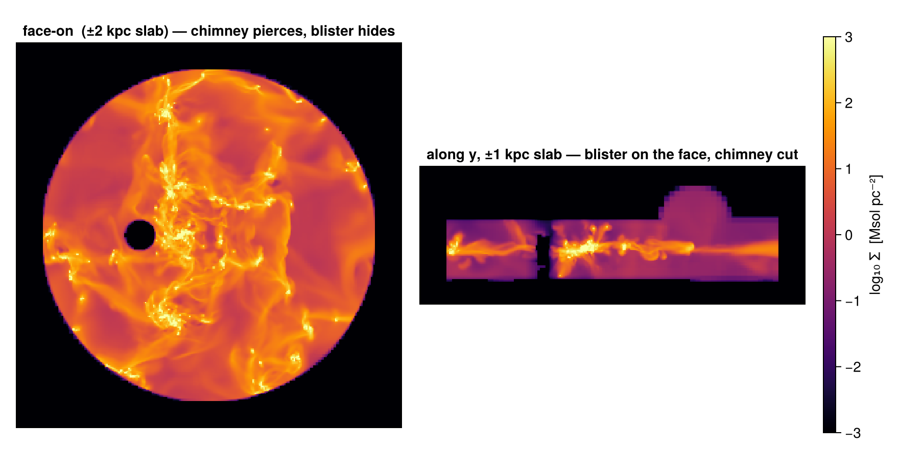
The identity closes, and the edge-on view explains the face-on one: the blister only adds gas above the +z face (invisible face-on, where the disc outshines it), while the chimney removes a full column (black face-on). Now three constructs with astrophysical names — chimneys (a disc minus vertical flow channels), a crescent (two offset spheres, the classic shock-front / bow shape), both shown in the views that make them legible:
chimneys_region = disc_region \ (Cylinder(1.0, 5.; center=[18., :bc, :bc], range_unit=:kpc) ∪
Cylinder(0.8, 5.; center=[26., 29., :bc], range_unit=:kpc) ∪
Cylinder(1.2, 5.; center=[30., 20., :bc], range_unit=:kpc))
chim = subregion(gas, chimneys_region, verbose=false)
crescent_region = (Sphere(5.; center=[28., :bc, :bc], range_unit=:kpc) \
Sphere(4.5; center=[30.5, :bc, :bc], range_unit=:kpc)) ∩
Cuboid(xrange=[-12, 12], yrange=[-12, 12], zrange=[-1.5, 1.5],
center=[:bc], range_unit=:kpc)
cres = subregion(gas, crescent_region, verbose=false)
println("chimneys: ", round(msum(chim, :Msol), sigdigits=5), " Msol crescent: ",
round(msum(cres, :Msol), sigdigits=5), " Msol")
pch_f = proj(chim; xrange=[-13, 13], yrange=[-13, 13], pxsize=[0.1, :kpc])
pch_e = proj(chim; direction=:y, yrange=[-0.9, 0.9], xrange=[-13, 13], zrange=[-3, 3], pxsize=[0.1, :kpc])
pcr_f = proj(cres; xrange=[-1, 10], yrange=[-6, 6], pxsize=[0.05, :kpc])
pcr_e = proj(cres; direction=:y, xrange=[-1, 10], zrange=[-3, 3], pxsize=[0.05, :kpc])
# ── figure code from here: panels, overlays, colorbars — no new Mera concepts ──
fig = Figure(size=(920, 800))
ax1 = Axis(fig[1, 1], title="chimneys, face-on — three drilled flow channels")
show_sd!(ax1, pch_f, (-13, 13, -13, 13))
ax2 = Axis(fig[1, 2], title="chimneys, edge-on (±0.9 kpc slab: the x = −6 channel)")
show_sd!(ax2, pch_e, (-13, 13, -3, 3))
ax3 = Axis(fig[2, 1], title="crescent, face-on — two offset spheres")
show_sd!(ax3, pcr_f, (-1, 10, -6, 6))
ax4 = Axis(fig[2, 2], title="crescent, edge-on")
show_sd!(ax4, pcr_e, (-1, 10, -3, 3))
sd_bar!(fig[:, 3])
figchimneys: 2.2548e10
Msol crescent: 2.1784e9 Msol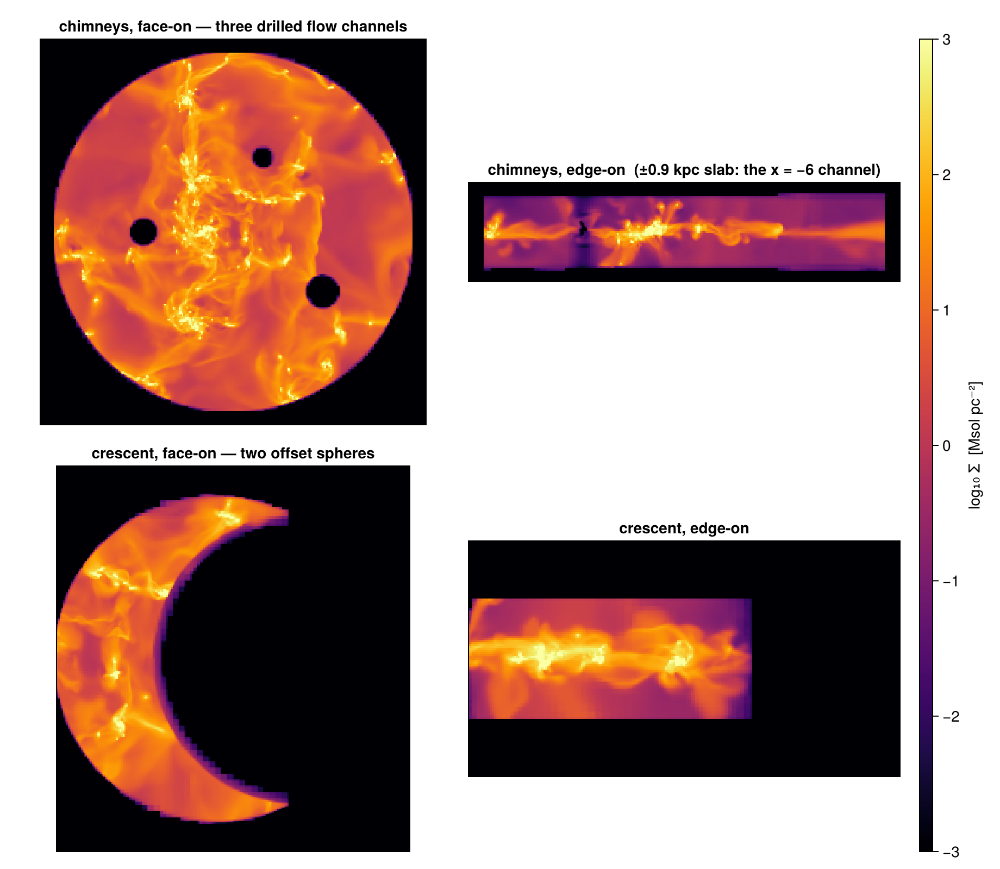
Swiss cheese, seeded by the data. Composites become genuinely powerful when the geometry comes from the data — here we carve a hole around each of the galaxy's three densest star-cluster sites (found from the star particles, next chapter's protagonists), the shape of a feedback-cleared ISM:
part = getparticles(info, verbose=false, show_progress=false)
pcols = propertynames(Mera.columns(part.data))
:birth in pcols && (part = Mera.construct_datatype(filter(p -> p.birth > 0., part.data), part))
println("star particles: ", length(part.data))
pxs = getvar(part, :x, :kpc) .- 24.; pys = getvar(part, :y, :kpc) .- 24.
pzs = getvar(part, :z, :kpc) .- 24.; pms = getvar(part, :mass, :Msol)
# densest star sites: 0.5-kpc 2-D mass grid in the 4 < r < 10 kpc disc annulus,
# greedy top-3 with ≥ 3 kpc separation
sel = (16. .< pxs.^2 .+ pys.^2 .< 100.) .& (abs.(pzs) .< 2.)
bins = Dict{Tuple{Int,Int},Float64}()
for (x, y, m) in zip(pxs[sel], pys[sel], pms[sel])
k = (floor(Int, x/0.5), floor(Int, y/0.5)); bins[k] = get(bins, k, 0.0) + m
end
sites = Tuple{Float64,Float64}[]
for (k, m) in sort(collect(bins); by=last, rev=true)
c = (0.5k[1] + 0.25, 0.5k[2] + 0.25)
all(hypot(c[1]-s[1], c[2]-s[2]) >= 3. for s in sites) && push!(sites, c)
length(sites) == 3 && break
end
println("cluster sites [kpc, centre-relative]: ", [round.(s, digits=1) for s in sites])
holes = reduce(∪, [Sphere(1.3; center=[24. + s[1], 24. + s[2], :bc], range_unit=:kpc)
for s in sites])
cheese = subregion(gas, disc_region \ holes, verbose=false)
println("swiss-cheese disc: ", round(msum(cheese, :Msol), sigdigits=5), " Msol")
pw = proj(cheese; xrange=[-13, 13], yrange=[-13, 13], zrange=[-1.3, 1.3], pxsize=[0.1, :kpc])
# ── figure code from here: panels, overlays, colorbars — no new Mera concepts ──
fig = Figure(size=(640, 520))
ax = Axis(fig[1, 1], title="disc \\ three cluster-site spheres (±1.3 kpc slab)")
show_sd!(ax, pw, (-13, 13, -13, 13))
for s in sites
scatter!(ax, [s[1]], [s[2]]; marker=:xcross, color=:cyan, markersize=12)
end
scalebar!(ax, -12, -12.3, 5)
sd_bar!(fig[1, 2])
figstar particles: 508939
cluster sites [kpc, centre-relative]:
[(-3.2, 8.8), (-3.2, -5.8), (-2.2, 3.8)]
swiss-cheese disc:
1.5925e10 Msol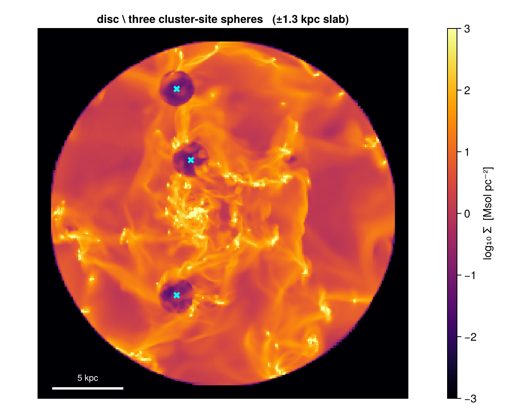
The crosses mark the sites the particles chose; the holes are where the gas was carved — and the ledger delivers the punchline: the three spheres hold ≈3 % of the disc's volume but ~30 % of its mass, because star clusters sit exactly on the densest gas. Two more shapes close the gallery — a plate carved into bows by four corner spheres (pure geometry), and a filament tube: three tilted cylinders stitched along a polyline, the shape you would use to follow an accretion stream or a spiral-arm segment:
plate = Cuboid(xrange=[-7, 7], yrange=[-7, 7], zrange=[-1, 1], center=[:bc], range_unit=:kpc)
bows_region = plate \ (Sphere(4.5; center=[17., 17., :bc], range_unit=:kpc) ∪
Sphere(4.5; center=[31., 17., :bc], range_unit=:kpc) ∪
Sphere(4.5; center=[17., 31., :bc], range_unit=:kpc) ∪
Sphere(4.5; center=[31., 31., :bc], range_unit=:kpc))
bows = subregion(gas, bows_region, verbose=false)
waypoints = [(-9., -4.), (-2., 2.), (7., 6.)]
segs = AbstractRegion[]
for k in 1:length(waypoints)-1
a = [waypoints[k]..., 0.]; b = [waypoints[k+1]..., 0.]
d = b .- a; mid = (a .+ b) ./ 2 .+ 24.
push!(segs, Cylinder(1.2, sqrt(sum(abs2, d))/2 + 0.3; axis=d, center=mid, range_unit=:kpc))
end
fil = subregion(gas, reduce(∪, segs), verbose=false)
println("bows: ", round(msum(bows, :Msol), sigdigits=5), " Msol filament tube: ",
round(msum(fil, :Msol), sigdigits=5), " Msol")
pbw = proj(bows; xrange=[-8, 8], yrange=[-8, 8], pxsize=[0.05, :kpc])
pfl = proj(fil; xrange=[-11, 9], yrange=[-6, 8], pxsize=[0.05, :kpc])
# ── figure code from here: panels, overlays, colorbars — no new Mera concepts ──
fig = Figure(size=(920, 440))
ax1 = Axis(fig[1, 1], title="plate \\ four corner spheres — bows")
show_sd!(ax1, pbw, (-8, 8, -8, 8))
ax2 = Axis(fig[1, 2], title="filament tube — three stitched tilted cylinders")
show_sd!(ax2, pfl, (-11, 9, -6, 8))
lines!(ax2, [w[1] for w in waypoints], [w[2] for w in waypoints];
color=:cyan, linewidth=1, linestyle=:dash)
sd_bar!(fig[1, 3])
figbows: 1.0791e10
Msol filament tube: 2.3211e9 Msol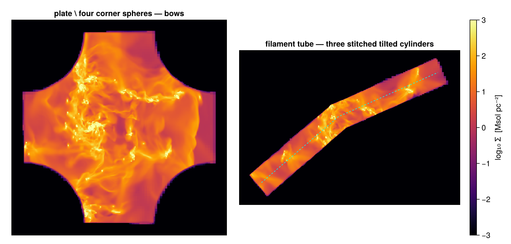
Every construct here remains a measurement: msum on any of them is fraction-exact, additive against its complement, and reusable — which the next chapter exploits by pointing the very same region objects at a different kind of data.
10. The Budget, with Stars
The region objects know nothing about cell data — applied to a particle dataset, subregion performs exact point-membership on the same geometry. So the §6 ledger extends to the stellar content of this star-forming galaxy with no new geometry at all: one region value cuts both datatypes.
zones_all = [("nucleus", nucleus_region, m_nuc),
("inner", inner_zone, m_inner),
("ring", ring_region, m_ring),
("rim", rim_zone, m_rim)]
println(rpad("disc zone", 12), lpad("gas [Msol]", 14), lpad("stars [Msol]", 15))
println("-"^41)
ms_zones = Float64[]
for (name, reg, mgas) in zones_all
ms = msum(subregion(part, reg, verbose=false), :Msol)
push!(ms_zones, ms)
println(rpad(name, 12), lpad(string(round(mgas, sigdigits=4)), 14),
lpad(string(round(ms, sigdigits=4)), 15))
end
ms_disc = msum(subregion(part, disc_region, verbose=false), :Msol)
println("-"^41)
println(rpad("sum", 12), lpad(string(round(m_disc, sigdigits=6)), 14),
lpad(string(round(sum(ms_zones), sigdigits=6)), 15))
println(rpad("disc direct", 12), lpad(string(round(m_disc, sigdigits=6)), 14),
lpad(string(round(ms_disc, sigdigits=6)), 15))
p_gasd = proj(disc; xrange=[-13, 13], yrange=[-13, 13], pxsize=[0.1, :kpc])
stars_d = subregion(part, disc_region, verbose=false)
sx = getvar(stars_d, :x, :kpc) .- 24.; sy = getvar(stars_d, :y, :kpc) .- 24.
# ── figure code from here: panels, overlays, colorbars — no new Mera concepts ──
fig = Figure(size=(640, 520))
ax = Axis(fig[1, 1], title="disc gas + its star particles — one region, two datatypes")
show_sd!(ax, p_gasd, (-13, 13, -13, 13))
scatter!(ax, sx[1:4:end], sy[1:4:end]; color=(:cyan, 0.15), markersize=1.2) # every 4th star
scalebar!(ax, -12, -12.3, 5)
sd_bar!(fig[1, 2])
figdisc zone gas [Msol] stars [Msol]
-----------------------------------------
nucleus 5.937e9
1.873e9
inner 3.95e9 1.153e9
ring 8.032e9 1.661e9
rim 4.915e9 4.586e8
-----------------------------------------
sum 2.28346e10 5.14581e9
disc direct 2.28346e10 5.14581e9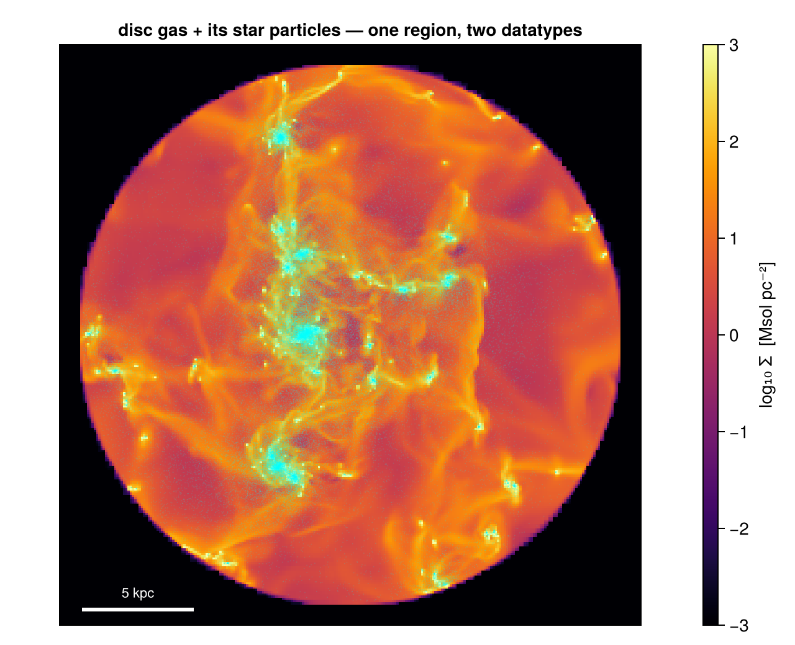
The stellar column tiles exactly like the gas column — particles are points, so zone membership is unambiguous and the four zones sum to the disc by construction. The overlay shows why the ledger looks the way it does: the stars trace the dense gas that formed them, concentrated in the nucleus and along the ring's clumps.
11. Working at Scale: Cut Once, Save, Reload
This page's snapshot loads in seconds, but the workflow transfers to snapshots that do not. Two levers, applied in order. Columns first: this whole notebook ran on gethydro(info, :rho, …) — the four AMR coordinates plus one field are all a mass budget needs, and on a multi-gigabyte snapshot that read-time column cut is the difference between fitting in RAM or not. Then the window: cut the region you will actually study once, save it with savedata, and do every subsequent analysis session from the compact file — loaddata reads a whole datatype before any spatial filtering, so windowing must happen before the save, not after the load:
win = subregion(gas, :cuboid; xrange=[-13, 13], yrange=[-13, 13], zrange=[-3, 3],
center=[:bc], range_unit=:kpc, verbose=false)
tmpdir = mktempdir()
savedata(win, tmpdir; fmode=:write, verbose=false)
back = loaddata(400, tmpdir, :hydro, verbose=false)
fsz = sum(filesize, readdir(tmpdir; join=true)) / 1024^2
println("working file : ", round(fsz, digits=1), " MB (", length(back.data), " cells)")
println("mass, window : ", round(msum(win, :Msol), sigdigits=8), " Msol")
println("mass, reloaded: ", round(msum(back, :Msol), sigdigits=8), " Msol")working file : 147.5 MB (17957496 cells)
mass, window : 2.7966433e10
Msol
mass, reloaded: 2.7966433e10
MsolThe round-trip is lossless, and every technique on this page — regions, algebra, budgets, refine — works on the reloaded object unchanged. On truly large data, release each section's working object when done (obj = nothing; GC.gc()) and keep exactly one in memory at a time.
12. Reference: the Classic Symbol API
Everything above has a whole-cell counterpart in the original symbol-based interface, which remains fully supported. It is the right tool for quick exploratory cuts where a jagged rim is irrelevant, and it keeps older analysis scripts working unchanged.
| Value type | Classic call |
|---|---|
Cuboid(xrange=…, yrange=…, zrange=…) | subregion(gas, :cuboid; xrange=…, yrange=…, zrange=…) |
Sphere(R) | subregion(gas, :sphere; radius=R) |
Cylinder(R, H) | subregion(gas, :cylinder; radius=R, height=H) (z-axis only) |
SphericalShell(rin, rout) | shellregion(gas, :sphere; radius=[rin, rout]) |
CylindricalShell(rin, rout, H) | shellregion(gas, :cylinder; radius=[rin, rout], height=H) |
Shared keywords: center, range_unit, inverse=true for the complement, and cell=true/false for the whole-cell or centre-inside test — the same two alternatives §3 derived from the split extraction, in symbol form. The comparison below duly lands above the split disc mass. One guard to know: radii and heights must be nonzero — a zero-sized region is an error. The center is never refused, but it defaults to the box corner, so omitting it on a sphere or cylinder places the region there and keeps only the octant inside the box; Mera notes that once per shape. A single zero component is perfectly good (a sphere on the x = 0 face is a legitimate region). The hydro cylinder additionally offers smooth_boundary=true, an intermediate edge softening predating fraction splitting. get_filtered_ranges recovers the bounding ranges of any cut, ready to pass to projection.
cub_c = subregion(gas, :cuboid; xrange=[-12, 12], yrange=[-12, 12], zrange=[-2, 2],
center=[:bc], range_unit=:kpc, verbose=false)
sph_c = subregion(gas, :sphere; radius=10., center=[13., :bc, :bc], range_unit=:kpc,
cell=false, verbose=false)
cyl_c = subregion(gas, :cylinder; radius=12., height=2., center=[:bc], range_unit=:kpc,
verbose=false)
shl_c = shellregion(gas, :sphere; radius=[10., 20.], center=[:bc], range_unit=:kpc,
verbose=false)
m_cylc = msum(cyl_c, :Msol)
println("classic cylinder (whole cells) : ", round(m_cylc, sigdigits=6), " Msol +",
round(100*(m_cylc/m_disc - 1), sigdigits=2),
" % vs split disc — whole boundary cells, as in §3")
xr_c, yr_c, zr_c = Mera.get_filtered_ranges(cyl_c) # normalised [0,1] box fractions of the cut
println("cut spans x ∈ ", round.(xr_c .* (gas.boxlen * kpc), sigdigits=4), " kpc (absolute)")classic cylinder (whole cells) : 2.29023e10
Msol +0.3 % vs split disc — whole boundary cells, as in §3
cut spans x ∈
[12.0, 36.0] kpc (absolute)13. Practical Guidance
Which mode when.
- Exploring? Whole-cell cuts (
cell=true) are the cheapest and guarantee you see all material near the region — a strict superset, and therefore a strict upper bound on any mass it encloses. - Want the fewest cells? The centre test (
cell=false, orsplit=falseon a value-type region) keeps a subset of the whole-cell selection and usually lands close to the split value — but §4's ring showed its residual has no guaranteed sign. Treat it as an estimate, never as a bound. - Measuring a mass, volume, or profile? Value-type regions with the default
split=true— the:fractioncolumn makesmsum,getvar(:mass),getvar(:volume), and projections boundary-aware, and adjacent regions additive. - Publishing a figure of a cut? Consider
refine=k— orrefine_to=[pxsize…]to match the boundary to your map's pixel grid (§7) — scoped to the area you render, not to the whole boundary.
Cost. Region selection is bounding-box pruned: cells that cannot touch the region are skipped outright, so a small or composite cut costs roughly its bounding volume, not the whole dataset. Splitting adds one fraction evaluation per boundary cell; interior cells are untouched. Fractions of curved surfaces are sub-sampled (nsub, default 8 per axis — §3 measured what that buys); raise it only when coarse boundary cells meet a tight accuracy requirement. refine=k multiplies only the boundary-cell rows (up to 8ᵏ children each) — cheap on a slab, expensive on the full surface of a large region.
Trust, but verify. The two structural guarantees of this page — region + inverse partitions the box, adjacent regions tile their union — are one-line checks (msum sums). Fire them in real analyses too; they are the cheapest insurance a mass budget can buy.
Summary
- On an AMR grid, a region boundary is a choice: whole cells strictly over-count, centre tests scatter close to the truth with no guarantee, and fraction splitting measures. Quote the split value; the whole-cell excess tells you how much the boundary cells matter.
- Fractions of curved boundaries are sub-sampled (
nsub): integrals are exact to that sampling, and §3 measured it against an analytic volume. Rendered edges feather at the local cell size, bounded by one cell + one pixel;refine=klocalises them to cellsize/2ᵏ, andrefine_to=[length, unit]matches the boundary to your map's pixel size (§7). - Value-type regions (
Sphere,Cuboid,Cylinder,SphericalShell,CylindricalShell) are applied withsubregion(gas, region), compose with∩ ∪ \ !, tilt viaaxis, invert withinverse=true— and adjacent split regions are additive, which is what let the §6 ledger balance to floating-point accuracy. - The classic
subregion/shellregionsymbol API remains the quick whole-cell workhorse and the compatibility path for existing scripts.
Continue with:
- Masking & Filtering — select by value (density, temperature, any derived quantity) and combine with these geometric regions.
- The sibling sub-region tutorials for particles, gravity, and clumps.
- Projections: Off-Axis — view along a tilted region's axis.